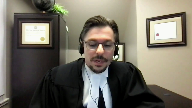

His Majesty The King v. Russell Steven Tessier
This transcript was made with automated artificial intelligence models and its accuracy has not been verified. Review the original webcast here.
Speaker 1 (00:00:04): The corp. The coup.
Justice Moldaver (00:00:16): Hmm
Justice Wagner (00:00:26): good morning please be seated in the case of her majesty the queen against russell stephen tessier for the appellant her majesty the queen matthew w greener for the intervener attorney general of ontario frank o and james v palangio for the intervener attorney general of new brunswick patrick miguinti for the respondent russell stephen tessier pavel j milcharek and kelsey sitar for intervener canadian civil liberties association samara sector mr greener

Speaker 2 (00:01:10): Thank you, Mr. Chief Justice.

Good morning, Justices.
As I was reading the factums on this matter, and I’d like to begin my submissions by saying, there seems to be broad agreement among the parties on at least some high-level principles that govern the analysis here.
So it’s accepted, I think, by everyone that the confessions rule as it’s developed has two purposes focused on the rights of the accused.
The first is the reliability purpose, that focuses at excluding unreliable confessions from evidence.
And secondly, a fairness purpose, which is principally derived from the principle against self-incrimination.
At the same time, as this court has held in Oichol and again in Singh, these objectives must be balanced against society’s interest in effective law enforcement.
The police are entitled to question anyone who may have information concerning crimes, really focuses on is where to strike that balance and the particular rules that govern the voluntariness analysis under the common law confessions rule.
It’s my position that properly understood, the confessions rule balances these two factors by requiring the Crown to prove two things beyond a reasonable doubt.
First, that the statement is the product of an operating mind.
Second, that there has been no improper interference by the police in the accused decision to make a statement.
The focus of the voluntariness analysis in my submission is on the actions of police, not on the particular understanding or motivations of the accused.
And as this court has described the threshold for a finding of improper interference or improper persuasion, this court has used language like conduct which effectively and unfairly deprives the accused of the ability to choose or conduct that overbears the will of the accused.
Where a trial judge properly applies the governing law, it’s clear in my submission that the ultimate decision of voluntariness is entitled to a significant degree of deference and ought not to be disturbed on appeal.
Here, I say the trial judge considered all the relevant circumstances.
He identified the correctness of the accusation and the correctness of the accusation.
He also identified the correctness of the accusation as he identified the correct applicable legal principles and applied those to the facts as he found them.
His decision that Mr. Tessier’s statement was voluntary should be restored by this court.
He also made a fine…
Justice Brown (00:04:04): finding that Mr. Tessier wasn’t a suspect at the time of the questioning.

I’m sorry, my mic keeps going off.
Had he not made that finding, would it have changed necessarily his decision on whether the statement was voluntary?
Speaker 2 (00:04:31): It’s difficult to say.

My submission would be even had he found Mr. Tessier to be a suspect, the presence or absence of a caution remains one factor to consider in the analysis.
It may have been a more significant factor had he made that finding.
It’s hard to say.
Justice Brown (00:04:52): Would it be then, would it then follow that if that finding were palpably and overridingly an error, that the balancing would have to be redone?
Speaker 2 (00:05:10): I agree it would follow.
I don’t agree that that finding was an error.
Well, let’s talk about that. Sure.
Justice Brown (00:05:19): Sergeant White admits at the time of the first conversation that he was hoping to extract a confession from Tessier.
Speaker 2 (00:05:34): So Sergeant White’s evidence, as I read it, is he agrees in cross-examination that, you know, if Mr. Tessier were prepared to confess, he was prepared to receive that confession.

But he’s also clear that he, at the outset of the interview, did not consider Mr. Tessier either a suspect or a person of interest.
That given the information that he had going into the interview, it was very limited.
You know, it’s not that he didn’t consider Mr. Tessier as a suspect.
It’s just that he didn’t consider Mr. Tessier as a person of interest in the interview.
He didn’t consider Mr. Tessier as a person of interest in the interview.
Justice Brown (00:05:59): that he holds the truth as far as Sergeant White’s concerned.

Gosh is there any reason why his DNA might be near the crime scene?
Gosh you have a great deal of emotion, you’re on edge, can I look at your shoe to eliminate you?
And again he admits that that he was ready to receive a confession.
So going in, sure, but in the course of that, doesn’t it seem that we’re moving closer and closer to suspicion?
Speaker 2 (00:06:31): So there’s some question I’d suggest him what it means to have suspicion.

Sergeant White’s evidence was he’s gauging Mr. Tessier’s reaction and the trial judge accepted that evidence.
He had no grounds to detain him and of course he doesn’t detain or arrest him at the conclusion of the interview, either interview.
Mr. Tessier is not arrested for 10 years.
He’s perhaps alert to the possibility given some of the information provided to him by Mr. Tessier and Mr. Tessier’s overall conduct and what I would say are his, Mr. Tessier’s intentions in the interview.
Sergeant White perhaps is alive to the possibility Mr. Tessier might have information that he’s holding back.
Does that make him in fact a suspect?
Sergeant White was clear that it didn’t.
He’s open to this possibility but it’s very preliminary stage of the investigation.
He has no forensic evidence.
There’s no witness evidence that would connect Mr. Tessier to the offense.
Justice Brown (00:07:32): But was that the standard for someone being a suspect?

I mean, I know Sergeant White seemed to think so.
That the reason that Mr. Tessier wasn’t a suspect was that there wasn’t any evidence.
But even if he subjectively didn’t believe him to be a suspect, wouldn’t a reasonably competent investigator have thought that he was at that point?
Speaker 2 (00:07:56): Well, the information that Sergeant White has again really largely boils down to the fact that Mr. Tessier is an associate of the deceased.

So it’s clear, and I don’t dispute this, that the police will pay attention to, they’ll look into associates of the deceased.
That’s clearly what the investigation as a whole is doing at this stage.
We have multiple officers, not restricted to Sergeant White, who are out tracking down Mr. Berdahl’s ex-wives, his other friends.
There’s some questioning in this interview of other contacts the police may follow up on.
And so in my submission, we would expect police to be at least alert to that possibility, but there’s no evidence to suggest that Mr. Tessier in particular, as opposed to these other contacts of Mr. Berdahl’s, is particularly likely to have been involved.
And so suspicion in my submission, it’s too low a bar essentially to say that if there’s some possibility of involvement, then we should impute suspicion to the police.
We should impute that in the context of the interview, police have treated the accused, who again is brought in voluntarily as a witness, treat him as a suspect.
Justice Moldaver (00:09:28): Is your point that mere suspicion that someone might have done something does not reach a level of I have reason to suspect you?
Is that what you’re saying?
I am saying that.
Yes, all right, but I am saying that.
Yes, all right, but I am saying
Speaker 2 (00:09:42): I’m also saying in maybe a roundabout way, because in the back of my mind is the Warrell decision, which was relied on at trial by counsel from Mr. Tessier.

And Warrell, in my submission, sets a bar at when the police have information, that would alert a reasonably competent investigator of the possibility that the person they’re speaking to is involved in the commission of the offense they should caution or they’re obligated to caution.
And in my submission, the Warrell test certainly, even if we’re going to rely on the suspect witness distinction, which I accept is relevant but not determinative, Warrell simply sets too low a bar for that finding.
Something more akin to reasonable grounds to suspect or reasonable grounds to believe is more consistent with the voluntariness rule and providing police with a scope to investigate, particularly in early stages, where we want them to speak to as many people as possible, gather as much evidence as possible, and not narrow their minds or develop tunnel vision very early in the investigation unless it’s warranted by fairly compelling evidence.
Now, in terms of the suspect witness distinction, it’s my position that that’s a relevant consideration, but it’s not determinative.
And that connects in my submission to what role does the police caution play in the analysis, the presence or absence of a police caution.
The Court of Appeal in my submission erred and gave essentially a dispositive place to that factor because of how it approached the question of voluntariness from the outset.
And it approaches that question at paragraph 46 of its decision, which I’ll take you there, if I may, and it’s in the condensed book at tab 2, page 11.
Paragraph 46, at the end of that paragraph, the error which the Court of Appeal identifies purported error in the reasoning of the trial judge is this.
He focused his analysis on the four factors identified in Oichol, using them as a checklist but failing to address the key issue in this case.
Did Mr. Tessier make a meaningful choice to speak to police?
Did Mr. Tessier understand that what he said to the police could be used against him and that he was not obliged to say anything?
Again, two pages later at paragraph 54, the trial judge found that he, Mr. Tessier, was 40 years old, employed with a certain level of confidence and intelligence.
But that finding does not conclude the analysis on voluntariness because it does not address whether he made a meaningful choice to speak to the police, knowing that he was not required to answer police questions or that anything he did say would be taken down and could be used in evidence.
In my submission, the issue here, and I agree with the Court of Appeal, the issue is not whether the police needed to administer a caution.
But where the Court of Appeal says the issue is, did Mr. Tessier speak knowing subjectively that he had the right to silence, that anything he said would be taken down and could be used in evidence?
That’s a focus on Mr. Tessier’s subjective understanding of his right to silence, which is inconsistent with the development of the confessions rule.
And specifically, as I’ve indicated in my factum, the requirement that the Crown prove that when the accused makes a statement to police, he knows he doesn’t have to, he knows the statement can be given in evidence against him, that essentially requires the Crown to prove a waiver of the right to silence on the beyond the reasonable doubt standard.
And in the factum, I’ve given you, most notably in my submission, a bear, where Justice McLaughlin’s issue then was, it’s very clear that the right to silence, and this is not a right to silence which is exactly identical to voluntariness, but is derived from it, and I’d suggest should be interpreted consistently with it, does not require proof of a waiver of the right to silence.
That’s not the threshold.
The threshold is, in my submission, was this a choice that was improperly interfered with by state action?
So the Court of Appeal in formulating voluntariness in the way that it did in my submission misapplied this court’s decision in Whittle.
So the trial judge makes this finding, correctly in my submission, that the absence of a caution here isn’t a matter that goes to whether or not Mr. Tessier has an operating mind.
That was an argument that was made before him.
In the voir dire transcript, it’s page 257, second volume of the appeal record, that because in Whittle this court framed the limited cognitive capacity test in terms of an ability to understand the police caution, it would follow that where no caution is given, the accused can’t understand those things.
And so that should be sufficient to raise a reasonable doubt as to voluntariness.
The trial judge rejected that.
And the Court of Appeal, as I read their reasons, seems to suggest that he erred in doing so, that this indicates that he wrongly focused on purely limited cognitive capacity and not on what the accused actually knew.
But in my submission, Whittle is clear that it’s a case about capacity to understand.
And that’s at tab 4B of the condensed book.
In paragraph 46, sorry, page 46 of the condensed book, Justice Sapienka says, the operating mind test requires that the accused possess a limited degree of cognitive ability to understand what he or she is saying and comprehend the evidence may be used in proceedings against the accused.
There’s no evidence on this record that Mr. Tessier was unable to understand these things.
He plainly knew he was speaking to police.
He plainly was not unsophisticated, had some worldly experience, was not intoxicated, was not suffering from any evident mental illness, nor indeed is there any evidence to that effect in the record.
And then Justice Sapienka says in Whittle, the relevant test is, did the accused possess an operating mind?
The test goes no further and no inquiry is necessary as to whether the accused is capable of making a good or wise choice or one that is in his or her interest.
So Whittle properly read, I say, is in fact purely a question about cognitive capacity.
It does not require the court to consider even whether or not the accused was able to make a good choice, let alone that he actually made one.
And so Worrell, a case relied on by the Court of Appeal, which suggests that Whittle stands for the proposition that voluntariness requires proof of an actual awareness of what’s at stake in speaking to persons in authority, I say, is mistaken and the Court of Appeal erred in reading it that way.
Instead, what I say is, and the analysis is on, in all cases, whether or not the accused in all cases, whether the accused made a meaningful choice to speak to police.
Other cases, this court has described that as an effective choice.
And in my submission, what’s required there to prove that is not that the accused waived his right to silence on the high standard for waiver, but whether he was capable of making a choice, had the cognitive capacity to make that choice, and whether the choice actually made was not improperly influenced by what the police did.
So that we can say it was, in fact, his or her choice.
The focus of the analysis is on the actions of the state of, typically, the police.
Justice Martin (00:19:11): But Mr. Greener, may I ask you this question?

Accepting all of that that you said is the correct standard and should be the correct standard.
What is the problem with making it important, and there’s different ways of doing that, for the police to ensure that the person knows about those rights?
Not that they’re waiving them, but that they just have an informational component to those rights, rather than just assuming they know them.
What about starting any even questioning of a suspect, as in this case, where they’re getting information, by setting out that there’s no obligation to speak, that there is a right to silence, that there is an ability to use this evidence when they do decide to speak.
Because then we’re talking about an operating mind, we can talk about all those same things, but the baseline of meaningful choice, or effective choice, or informed choice, we’re assuming that there’s knowledge.
Can we assume that there’s knowledge, even under the test that you’re putting forward?
And on what basis?
That everybody knows their rights, everybody knows the law?
Speaker 2 (00:20:37): So there’s obviously no harm to doing it, and there may in particular cases be significant benefit to doing it, but I do suggest that the law does proceed from a sort of starting point assumption that the police are free to question anyone, but anyone is free not to answer the police, to decline to answer.
We see that in Precor, we see it in Esposito, frankly even in Grant in terms of detention.
Justice Martin (00:21:08): What’s the problem with explaining that assumption and just outlining that that is, in fact, the case?
So it levels the playing field.
It takes away a little bit of the subjective-objective difficulties we may have because we have a shared informational baseline.
And it kind of reduces the ability or the necessity of saying when does something like a general questioning about a deceased person become a more targeted investigation that may implicate rights of self-incrimination, if you know what I’m saying there.
Why would that be a – why is that wrong or a problem?
Or why isn’t that just a basically good practical idea?
Speaker 2 (00:21:54): So I think that it may well be a good practical idea, the police may be well advised to do it in most cases, but what I’ll say in general in application of the confessions rule and then in this case maybe in particular is the presence or absence of a caution in my view is certainly not irrelevant.

It’s an important factor in many cases.
It’s not, I say, determinative in this case.
The confessions rule has always focused contextually on the full set of circumstances, factual circumstances, focusing on whether or not in this case for this accused or for an accused with this accused particular circumstances, the police have unfairly influenced the statement.
And, you know, in any case, so the suggestion of, well, why not require the police to do that at the outset of every conversation they might have with someone?
My suggestion is that what this court has held in response to that question in the past is that to caution everyone effectively would on the one hand needlessly alarm people.
So the content of the caution it’s important to bear in mind is, traditionally, you are being or you may be charged with an offense.
Overlapping speakers (00:23:29): that you have.
Speaker 2 (00:23:29): have the right to silence anything you say may be given an evidence.
So the suggestion that you know police doing for example door-to-door canvassing on a homicide will tell everyone whose door they knock on just be alert to the possibility that we may charge you with an offense here and anything you say may be given an evidence.
Justice Martin (00:23:52): But would a caution have to refer to a charge?
I’m not talking about a caution in perhaps the same way.
I’m talking about just the basic shared informational baseline that we say underpins the case is to say, hello, we’re canvassing about this murder.
I mean, I’m just making this up here now.
You don’t have to speak with us.
We’d like you to speak with us.
But just, you know, whatever you say can be an evidence.
But just some kind of way there, not that we are charging you wouldn’t, you know, because that would not be appropriate, perhaps.
But I’m just talking about the shared informational basis.
Speaker 2 (00:24:41): So, what I would say is that in a case where there’s no realistic prospect that the person police are speaking with is involved in the offence, no, either in fact or even on information known to the police, there’s little to be gained, and maybe we say it would do no harm, but it may in fact deter some number of people from speaking with the police.

It may deprive the police of relevant information in particular cases.
The Confessions Rule has sought to balance, as I said, the need to protect rights of the accused, including the right to silence, or the privilege against self-incrimination, but not throw up unnecessary roadblocks in the face of effective investigation of crimes.
And secondly, the focus of the Voluntariness Inquiry, because it’s contextual and fact-specific, it has not relied on, and it ought not rely on, bright line rules or formulas about what police do or don’t do or say.
The law has been, and I suggest ought to be, that the real focus is on the coercive power, if I can say it that way, of the state, the potential for coercion that arises in the historical cases most clearly on arrest, detention.
And of course, the scope of the need for the protection of the Voluntariness Rule on arrest or detention is certainly not irrelevant, but somewhat reduced by the requirements of Section 10 of the Charter and Section 7.
The Voluntariness Inquiry properly focuses on, you know, the circumstances of this investigation.
So I don’t disagree that it may be a good idea for police in many cases to explain that information in an informal or non-threatening way.
I think we will, if the test is actual knowledge of those rights, we’ll wind up in, I suggest, litigation over whether the way in which the police delivered the words was sufficient to alert this particular person to the particular risks in speaking to police.
Justice Moldaver (00:27:05): It seems to me you’ll get into a waiver problem, a very problem that exists throughout our law which is oh well they didn’t really waive because they really didn’t know what their rights were and this is the police telling them can we really believe the police when they tell us things you’ll get into all that
and so we may as well start giving everybody at the scene of an accident who the police want to just say did you see anything their rights to counsel.
Justice Kasirer (00:27:37): Mr.
Overlapping speakers (00:27:37): Mr. Grenier.
Justice Kasirer (00:27:38): Could I, so I didn’t mean to interrupt you if you wanted to respond to Justice Moldaver.
Didn’t call for a response.
I have a question that I’d really, this is a question I need your help in understanding.
I take your point that there’s a kind of a post-detention logic to the, to a kind of right to silence sort of analysis that doesn’t fit ordinarily with a pre-detention circumstance that we associate with the common law confession circumstance.
But I’m wondering about the use of the expression meaningful choice or its analogues active choice in some of the confession cases.
Thinking of, I want to say it right, Hebert, I’m not quite sure how you like to pronounce it, or even sing.
And so I’m wondering how that language, which seems to have been picked up upon and transferred a sense that the post-detention notion of choice applies in a pre-detention setting of confession.
I’m wondering if you, I mean, was Hebert wrong in using that language or was it pointing to the fact that, that well, it’s wrong to trick someone into thinking that they’re speaking to not speaking to a police officer as opposed to an undercover cop, which I think which was the case in Hebert, if I’m not mistaken.
Speaker 2 (00:29:24): So I agree, Justice Casarero, that we will look to some extent in a bear to the particular rule that was being fashioned in that case.

And that rule was, and it’s very clear in the decision, went beyond the common law confessions rule in certain ways.
It was targeted at a particular kind of police activity, the cell shot.
And so in that case, the fact of detention was present and is sort of the trigger for the rule, which was crafted in a bear.
It doesn’t, for example, prevent the use of undercover officers, even to actively elicit evidence prior to custody.
So the confessions rule, I think, has some commonalities with that rule.
It’s obviously different.
The confessions rule, however, I do say, and I think this is consistent with a bear and Singh, remains focused on sort of broadly the coercive power of the state.
And then within that focus, there are what might be called subtler coercive effects, which are brought on or heightened by detention, which may be heightened by the presence of suspicion on the part of the police, where that’s sort of obviously being communicated to a person being interviewed.
Those are factors which are relevant in considering the weight to be allocated to the presence or absence of caution in a particular case.
And so in terms of the language of effective choice, meaningful choice, or active choice, my submission is that the analysis there is whether the choice that was made was in fact the choice of the accused in a, I mean, in a legal sense, in a legally significant sense.
There’s no requirement, we see this in Fitton, we see it certainly in Oichel, there’s no requirement that the accused have made a statement entirely specifically to the accused.
There’s no requirement that the accused have made a statement entirely spontaneously, obviously, entirely unprompted by anything done or said by the police, including the asking of questions.
But on the other hand, we do, there’s a permissive inference, at least, that an accused who chooses to speak in the absence of anything done by the police to force him to do so is doing it because he’s made a choice to do it.
And so that, I’d suggest, is what’s meant by meaningful choice.
It is the sort of choice in the factual sense that the accused has made to say something.
Is that a choice which in law we can say was in fact his choice, or was it a choice which was forced upon him by the actions of police?
And that’s where the cases, Oichel and Spencer in particular, talk about the language of overbearing the will.
Justice Moldaver (00:32:29): Isn’t this a situation, Mr. Greener, that the law has changed in terms of what a detention is?
And it seems to me in terms of meaningful choice, the problem with someone who is detained and hasn’t given their rights is they feel they have no choice but to respond to the police in the circumstances.
Not they even, that a reasonable person in the circumstances would feel that he or she does not have a meaningful choice to say, I’m leaving, I don’t want to talk anymore.
And once you go down that road, which this court has gone, it just seems to me that that is the focus of what we should be looking at.
First, was there a detention?
Was this person in the circumstances, in effect, deprived of a meaningful choice because a reasonable person in the circumstances would feel that they had no choice but to respond?
It seems to me that’s where we should be starting these kinds of analysis these days, rather than sort of trying to, you know, alter or wiggle around with the confessions rule, where it really isn’t necessary.
Okay, about that, I’ll put it in the form of a question as opposed to an assertion.
Speaker 2 (00:34:00): No, I agree that in many cases, given the breadth of the psychological detention test under Grant, that in many of the factual circumstances where this type of coercive pressure that we’re concerned about is present, that’ll be also manifested in an analysis under Section 9 or 10 of the Charter, the detention analysis.

Now, of course, my friends here say that there was a detention here, that the trial judge erred in not finding one.
And so it may be helpful just to sort of revisit briefly the factors that the trial judge relied on to find no detention here, because there’s significant overlap, I’d suggest, between his voluntariness analysis and his detention analysis.
And so, you know, we see in the detention analysis the emphasis on the fact that this is a voluntary interview.
Mr. Tessier is phoned up by the police.
He’s told they’d like to speak to him about Albert Dahl.
First officer he speaks to, he says, you know, I’m out of town, I’m in Didsbury, that officer’s in Calgary, but he’s willing to attend the Didsbury detachment.
So he’s invited there.
When he arrives on his own, when he arrives, he’s not searched, he’s not placed in handcuffs, he’s obviously not arrested.
He’s invited back into an interview room, which is the door’s closed, but it’s not locked.
There’s no indication that Mr. Tessier is told or has any reason to believe that it would be locked.
And then he’s interviewed for about 80 minutes about, you know, what he knows about Mr. Tessier’s, sorry, Mr. Burdahl’s comings and goings.
He’s asked about his own activities the last couple of days.
He has, I agree, directly asked a number of questions, you know, did you kill Albert Dahl?
Questions like that.
These were, of course, considered, I say, by the trial judge.
But what’s particularly significant for a detention analysis is the fact that the accused leaves the detachment to go out for a smoke halfway through this first interview.
He’s not accompanied.
At the end of the interview, he invites Sergeant White to come with him to go see the truck to pick up Al’s things from the truck.
He asks Sergeant White, can I ride with you?
Why don’t I ride with you?
I’ll tell Ray, his friend who’s waiting outside for him the whole time, that we’re going to do that.
So it’s Mr. Tessier who’s sort of taking the lead in a great deal of this interaction with police.
And of course, then he returns quite urgently of his own initiative to the detachment.
Starts making sort of phone calls and then shows back up a couple hours later, insisting on speaking to Sergeant White.
Quite insistent again that he have the police accompany him to his apartment in Calgary.
So all of that, I say, on the facts of this case, support the trial judge’s finding that there’s no detention here.
That encounter with police, which is largely driven by Mr. Tessier in a number of aspects, it’s initially prompted by the police, of course, but we expect the police to ask questions in a homicide investigation, to reach out and contact people who may have information.
He speaks to, in my submission, a lack of compulsion here.
Justice Moldaver (00:37:58): he made a meaningful choice, right?

The evidence is squarely in front of everybody when he says, you know what, I’m not gonna give you a DNA sample.
Is that the kind of situation we looked at to say, oh my goodness, he didn’t know his rights, he felt compelled to do whatever the police wanted him to do.
We just ignore that kind of thing though for this sort of analysis that this man was not doing precisely what he wanted to do when it suited his purposes.
And when it didn’t.
Speaker 2 (00:38:32): Um, I, um, yeah, I agree that it’s relevant to this analysis what Mr. Tessier was doing.

Um, you know, if we look at cases like, and to return to voluntariness now, we looked at cases like Oichole and Spencer.
This court in doing the voluntariness analysis has looked to the conduct of the accused in the course of the interview in assessing whether or not his or her will was overborn.
So in Spencer, for example, um, this court notes that it’s relevant that the accused was aggressive in the interview, that he was the one offering deals, looking for a deal before he confessed.
That was relevant to whether or not, um, some possible inducement, uh, made by the police impacted the decision to confess.
And so here, where of course we have no confession, it’s, it’s an exculpatory statement.
It’s clear in the record, I’d suggest that Mr. Tessier has a plan in attending this detachment.
And so we see him, for example, persistently trying to get information out of Sergeant White about what the police know about the investigation.
So he, he asked very early in the interview, you know, when exactly did this take place?
When did they find him?
Friday afternoon or what?
He says, you know, what did happen to him?
Was he stabbed or what?
Um, was he hacked up?
He asks later.
Again, when he comes back to talk about the gun, he says very clearly, I don’t know how he died.
You didn’t tell me.
I’m just trying to figure out what, you know, how it happened, whatever else.
He asks Sergeant White, can you tell me anything else about what happened to him?
So it’s clear that Mr. Tessier’s motivations in participating in this interview are at least in part, uh, to get a read on what the police know in the investigation.
He says this explicitly, he talks to, this is before the smoke break, that after he had the phone call from police, he had a discussion with his friends, Ray and Fay, about whether or not he should speak to the police.
So it’s clear from the fact of that conversation, my submission, that he knew he had a choice not to.
And that Ray and Fay had told him, you know, try to find out if there’s going to be charges or whatever else, try to find out what position they’re putting you in.
So that’s his motivation, in fact, in attending the station.
I suggest that’s important in whether or not, even though he’s not cautioned, he knew what was going on.
He’s very guarded, I’d suggest, in the information that he’s prepared to give to the police when right at the outset of the interview, and this is in the condensed book at tab 7D, page 125.
So we see the bottom quarter or so of this page, starting at line 134, Sergeant White says, very open-ended question.
So he’s advising, we’re investigating a homicide, it’s Alan Beardall.
Tell me everything you know about Al.
And the last time you talked to him, saw him, dealt, spoke with him.
And there we see Mr. Tessier talk about, well, we’ve been doing the auctions, I met his uncle Mike, I know Mimi, by the way, Mimi absolutely hates him.
We do auction stuff, and he was supposed to go to Winnipeg, and then he stops himself and he says, well, why don’t you ask me some questions about him?
So I’d suggest that what we see there is a little bit of a conversation.
So I’d suggest that what we see there is Mr. Tessier is trying not to say too much.
He wants to find out what the police know before he discloses that he knows something, or that maybe they don’t, or that they’ll find significant.
Again, as Justice Moldaver, as you pointed out, we have this discussion about providing a consent DNA sample.
Mr. Tessier’s first asked about that.
He’s told by Sergeant White clearly that the reason why the police would want that is it would possibly eliminate him as being present at the scene.
His first response to that is, sure, why wouldn’t I?
He then starts to think, well, here’s some reasons why my DNA might be there.
You know, I might afflict a cigarette out as I was driving by.
There might be some DNA from my hair or something on Al’s clothes because we hang out together all the time.
I used to buy him smokes.
He used to buy me smokes.
We’d smoke each other’s smokes.
And then after the break in the interview, he goes out, talks to Ray.
He comes back in.
He’s changed his mind.
And Sergeant White essentially drops it at that point, right?
It’s not returned to Sergeant White.
It’s not pressuring him to change his mind.
He leaves open that possibility at the very end of that first conversation.
But what we do see, I say that Mr. Tessier is making decisions about what he is and isn’t prepared to share with the police.
We also see in this interview that Mr. Tessier is repeatedly trying to direct the police to other people they should be looking at as suspects.
So I’ve already taken you to this where, right out of the gate, Mr. Tessier is suggesting, well, his ex-wife absolutely hates him.
When he talks then, just the next page of the condensed book, 126, here’s a discussion about when’s the last time you saw Albert.
I’ll start there.
And Mr. Tessier’s answer is, well, that was Thursday.
He was packed up to go.
He was heading off to Bowness.
He has a drug addiction.
He goes and gets drugs.
He has a drug dealer who lives out in Bowness.
He owed a lot of people different amounts of money.
He was supposed to be coming back.
So, you know, essentially a suggestion from Mr. Tessier, well, he was heading off to see this drug dealer.
His drug dealer’s a shady character.
He’s not a drug dealer.
He’s a shady character.
He owed him money.
So there would be a motive for the drug dealer to have done something to him.
Then he says, again, after I last saw him, he’s going to see his uncle Mike.
He returns when he’s trying to suss out from Sergeant White whether or not they believe that Al was stabbed.
He says, you know, Al carries a lot of knives.
He’s worked as a bouncer, as a body guard, or whatever.
And then again, finally, at the end of this first interview when they’re out at the truck, Mr. Berdahl says, you know, I can get you some numbers.
As I said, for some of his, that’s Al’s other not so good characters.
So throughout the interview and my submission, we see Mr. Tessier in control of the interview.
He’s there because he wants to be.
Overlapping speakers (00:45:46): He’s
Speaker 2 (00:45:46): there in the hopes that he can A, find out what the police know and give them enough information to deflect their attention away from him.
And that, my submission supports the trial judge’s conclusion that this was a voluntary statement, that the police didn’t do anything and didn’t do anything or fail to do anything that affected Mr. Tessier’s decision.
Again, it’s clear from the the voir dire evidence that Mr. Tessier is not ordered to attend the detachment.
He’s not told by the police ever that he has to cooperate with them for an interview.
He’s invited.
He’s not told that he doesn’t have to.
I concede that.
Excuse me.
But really here, the ultimate issue, as the cases say, is was this his free choice?
Was this a choice of his own will, Mr. Tessier’s own will, to speak to the police?
The trial judge found that it was.
And I would suggest to you that that finding is entitled to deference.
Now, Mr. Greiner, can I ask you a question?
Justice Jamal (00:47:17): because you just used the word I was wanting to put to you as a question.
Is it fair to say then that the voluntariness inquiry is about, the language about meaningful choice is really about the choice being a free choice, not necessarily an informed choice.
And the reason it doesn’t need to be an informed choice is because of the fact that the confessions rule, of course, would apply even pre-detention.
We’re talking about a very, potentially very early stage.
And so the balance between the rights of the state to engage in laws enforcement and the rights of the individual at a very early stage, and it’s a very different constellation of values that are at stake at that early stage.
So that’s why the focus is only with respect to the freedom of choice rather than it being an informed choice.
Obviously, after you get past the detention, then we are very much concerned about the choice being free and informed, but that’s the sense in which the meaningful choice is used.
Is that a fair sort of summary of what you’re saying?
And I guess Whittle also factors into that because that confirms that the choice doesn’t need to be a wise choice.
It’s not a wise or informed choice.
It’s just one that’s a free choice.
Speaker 2 (00:48:31): Yes, I agree.
The focus in my submission is on whether this choice is a product of free will, whether it’s a free choice.
That’s a choice that’s not being forced upon the accused by the actions of the state.
And so that’s why detention has always figured strongly as a factor, the presence or absence of detention, has always figured strongly as a factor in whether or not that choice was free.
Ultimately, it’s a question, again, for the trial judge, whether something the police did or didn’t do, unfairly deprived the accused of the freedom to make that choice.
But we don’t look to whether the choice was fully informed of the right to silence.
That is, it’s not a waiver analysis.
We look to whether the police did or failed to do something which deprived the accused of that free choice.
Justice Rowe (00:49:32): Now, I want to come back to a question that Justice Martin posed to you.

What would be the harm of every time the police speak to anybody, anybody, giving them the caution at the outset?
And I’m thinking that, I’m working on the proposition.
This is an assumption that most responsible citizens really want to help the police in their work.
I’m thinking just as an example of my two grandfathers, they were quite simple, honest fishermen.
So the RCMP shows up and I guarantee the first thing they would have said, how can I help you officer?
That’s exactly what they would have said.
And the officer says, by the way, before we start, I want you to know that you don’t have to answer any questions and anything you say, you know, may be used.
And all of a sudden, what is a citizen who’s very desirous of assisting the police as a responsible member of the community is now alarmed, is now put on their guard, is now seeing the police officer in an adversarial situation, and is now fearful perhaps of a false accusation.
Is that not a reason why cautioning persons in purely innocent circumstances can actually impair police work without assisting in any way in protecting the rights of persons who later become suspects?
That was the question.
Speaker 2 (00:51:11): I agree with the premise of the question and I’d suggest that is the reason why in perhaps more concrete or descriptive language that’s the basis for the hesitancy that the courts in Canada have traditionally had in requiring the police to caution everyone with whom they speak.

Indeed, even the Court of Appeal here of course says that’s not required.
It’s not required because you risk needlessly alarming ordinary citizens and depriving or placing a hurdle in the way of the police obtaining valuable information.
I’m mindful of my time here and so one point that I do want to address in the respondent’s factum is the suggestion here that this isn’t a matter of the trial judge weighing the absence of a caution in his analysis but that he’s essentially given it no attention and therefore has applied an incorrect legal test or legal principle.
And so I do want to with my remaining time spend some time in the reasons of the trial judge which I have reproduced at tab three of the condensed book.
And so I just want to begin on page 24 where the trial judge sets out begins to set out the applicable legal principles.
The, actually let me begin on page 23 at paragraph 16.
The Court of Appeal was quite critical and my friend is critical of the trial judge for this statement that the policy reason at paragraph 16, the policy reason for the right to silence and the confessions rule is to prevent the state from receiving false confessions.
So I certainly accept that’s an incomplete statement of the policy reasons of the rule.
There is also an incomplete statement of the rule that the court of appeal is also a fairness component.
But where I take issue with the court of appeal is to suggest that in fact the trial judge completely lost sight of that other principle.
And I say he didn’t.
So we see at paragraph 22 he quotes Singh to say that voluntariness is inextricably tied to the right to silence.
So he’s plainly in my submission mindful of that.
And then when he comes at page 28, 27, 28 of the condensed book, that was paragraph 42, 43.
Now when he’s discussing the absence of the caution here he quotes at length from Ontario’s period court decision in Morrison.
And Morrison says, and he reproduces this, that failure to caution is a circumstance to be considered and that the failure to caution may in the circumstances effectively and unfairly deny the suspect the choice whether to speak or exercise the right to silence.
In my submission that’s a correct statement of the law.
And it shows that the trial judge is mindful of the importance of considering the caution in connection with the right to silence.
It’s not something that he’s overlooked.
Again he says that specifically in his own words at paragraph 45.
The failure of the interrogating officer to caution such a suspect may in the circumstances of the case effectively and unfairly deny the suspect the choice which is a factor courts must consider when deciding whether the suspect made the statement voluntarily.
So you know to return perhaps Justice Brown to your question at the outset, would it have made a difference to Justice Yamauchi if he had found Mr. Tesi to be a suspect?
Perhaps, perhaps not.
He’s clear that he has to consider this whether or not he finds Mr. Tesi to be a suspect.
He goes on of course to find that he’s not a suspect.
That’s a factual finding which I suggest is entitled to deference.
And it’s correct in my submission and the intervener attorneys general elaborate on this somewhat more than I’ll have time to, any more than I have, that suspicion or detention, their presence or absence are relevant factors to the degree of coercive power that’s targeted at the individual which is something that courts want to be especially alert to in their voluntariness analysis and Justice Yamauchi I say was alert to it.
To the extent that his reasons focus on whether or not there were grounds to consider Mr. Tesi a suspect, I’d say first in fairness to the trial judge these reasons are responsive to the arguments made before him on the voir dire which did focus on moral as the governing law and then on whether Sergeant White ought to have considered Mr. Tesi to be a suspect.
It’s also clear and it doesn’t excuse the trial judge from an obligation to get the law right of course but again in fairness this is a decision written under some time pressure.
Arguments on voluntariness are made the afternoon of jury selection and he’s under some pressure to get a decision back before the close of the Crown’s case so that if that evidence is admissible it can be called.
But ultimately when we look at how the trial judge identifies the legal principles it’s clear in my submission that he has correctly focused on whether Mr. Tesi’s ultimate decision to speak was the product of his free will.
He’s considered the absence of the caution.
He finds it doesn’t go to operating mind.
I suggest that’s correct.
It’s not a trick by police because there’s no evidence here that for example Sergeant White did consider Mr. Tesi a suspect and engineered a purportedly information gathering interview to try to paint him into a corner as Mr. Tesi colorfully puts it.
And ultimately the trial judge’s conclusion I suggest is that on the facts of this case given Mr. Tesi has evident control over what information he is and isn’t prepared to share.
Mr. Tesi’s own desire to find out information from the police.
The fact that again he’s free to leave halfway through the interview for a cigarette.
He comes back in at the end of the interview.
He’s obviously not determined to speak.
He’s obviously not detained.
Nothing to suggest that he has to stay.
He’s invited if he thinks of it to provide further information and then in fact within an hour having presumably realized that he’s got some risk in his gun being missing comes back to the station, manufactures this further encounter where he’ll have police discover the gun is missing.
And again how does he frame that when he comes back to the police?
Al was sleeping in that bedroom.
So if the gun’s gone it’s been stolen probably by Al.
And then who knows I don’t know what happened but evidently in my submission he’s concerned that police are going to connect that firearm to the murder and then he’ll have some explaining to do as he says again explicitly he’s aware of this he says it to Sergeant White.
Overlapping speakers (00:58:56): You know.
Speaker 2 (00:58:56): if it comes out that it’s gone and I don’t know about it now, that’s going to look worse for me.

And so I want it to be documented that I think it’s there and that I’ll be surprised if it’s gone.
I see that I’ve nearly used my time, so unless there are any further questions, I thank the court for your time.
Justice Wagner (00:59:21): Thank you very much.
Thank you. Mr. O.
Speaker 1 (00:59:27): Good morning, Chief Justice and Justices, on behalf of the Attorney General of Ontario, I will address the issue of police caution, focusing on why it is a relevant factor, but not a requirement or precondition in determining voluntariness, especially when the person being interviewed is not detained.

It is important to distinguish between those who are in detention and those who are not when they talk to the police, because people who are coerced to stay may also feel compelled to speak.
They’re more vulnerable than those who are not detained, and the law gives them more protection.
The rights to be informed of the reason for detention and the right to counsel under sections 10A and 10B of the Charter are triggered upon detention or arrest, and the law presumes that those who exercise that right will be informed by counsel of their right to silence.
Typically, the police who give the detainee the right to counsel would also read the standard caution at the same time.
You’re not obliged to say anything, but whatever you do say may be given in evidence.
This is a sensible approach because, as we said, a person who cannot simply walk away is at greater risk of potential police abuses.
The issue in this case is not what should happen when someone is detained, but rather when the police are talking to a person, they have neither grounds to detain nor the intention to detain someone who is actually free to go.
The law is clear that in these circumstances, in these circumstances, there is no requirement to caution.
As Alfactan points out, this is how the caution has developed historically, both in England and in Canada.
It is what this court and other appellate courts have repeatedly affirmed, and it makes sense.
It makes even more sense when we consider the recent section 9 injurious prudence, which developed a more robust protection for psychological detention and arguably broaden the circumstances in which a person, a detention, may be found.
In this context, when we say that a person is not detained, it means that a reasonable person in that person’s shoes would conclude that they are not compelled to stay, but free to leave.
Now let’s think about that.
If someone is free to leave, but this person is staying and talking to the police, surely one available inference is that the person is speaking voluntarily, just as the person is staying voluntarily.
This is an available inference whether or not the police has cautioned the person.
Now, of course, the entire circumstances, we have to be examined.
There might have been threats, inducements, oppression, or trickery that interfered with a person’s freedom to speak, but that’s exactly why the OICL factors focus on the objective conduct of the police, what a police had said or done, rather than the subjective state of mind of the speaker.
Because as this court held in sync, the protection afforded by the confessions rule has always been intended to guard against the potential abuse of the state of the superior powers over an individual suspect.
Now earlier, Justice Jamal and Justice Cassirer, you asked about the meaning of meaningful choice and the difference between an informed choice and a free choice.
In my submission, the context in which the Hebert case was decided is significant.
Bearing in mind that this is a case where the accused had asserted his right to silence, and then the state, through some trickery, extracted a confession by way of an undercover police officer.
Although in that decision, Justice McLaughlin used the word meaningful choice and informed choice and free choice almost interchangeably, notably, she said at page 177 at the Supreme Court review version, she said that I should not be taken as suggesting that the right to make an informed choice, whether to speak to the authorities or to remain silent, necessitates a particular state of knowledge on the suspect’s part over and above the basic requirement that he possess an operating mind.
The charter does not place on the authorities and the courts the impossible task of subjectively gauging whether the suspect appreciates the situation and the alternatives.
Now last Friday, this court heard the Crown’s appeal in La France, and my colleague, Mr. Garg, proposed a bright line rule for detention as part of Ontario submissions.
I want to explain how Ontario submissions on detention fit together with those on voluntariness.
First, I note that the detention caution proposed as an element of the bright line rule in La France is not identical to the standard caution in the voluntariness context.
The detention caution being proposed can be very simple, as short as four words, you’re free to go.
But the standard caution in use for voluntariness purposes is somewhat more involved.
Second, Ontario argued in La France that the detention caution is not a precondition to finding that a detention has not occurred.
Similarly, I’m arguing that the standard caution should not be a precondition to finding a statement voluntary.
Finally, a bright line rule is arguably justified in the detention context because the charter imposes a positive duty on police that requires them to know with some certainty when a detention occurs.
By contrast, this court has repeatedly emphasized that the voluntariness inquiry is necessarily contextual, and that it is to strict and rigid rules because they are bound to be over or under inclusive.
Rather, the entire circumstances must be considered, and in that context, the presence or absence of a caution is only one among many relevant factors.
Finally, I want to close my submissions by offering two reasons as to why this court should reject the proposal by the CCLA to make the caution a precondition to finding voluntariness.
Those reasons are history and reality.
First, the CCLA’s proposal is a radical transformation of the confessions rule as we know it, without any precedent in history.
It isolates and elevates one factor among many and deems it conclusive in rendering a statement involuntary, even though this court has repeatedly emphasized that a contextual analysis of all of the relevant circumstances are required.
Second, the reality is that people do make voluntary statements to the police, even in the absence of a caution.
This court observed in Oichol that few suspects will spontaneously confess to a crime. Why?
Well, perhaps they know, as many of us do,
that when speaking to a police officer, whatever you do say may be given in evidence.
The confessions rule must enable the search for truth in balancing its twin goals.
In my submission, this court struck the right balance in Oichol and in Sink, and we ask respectfully that you maintain this delicate balance.
Thank you very much.
Director, any further questions?
There was a mindset.
Thank you.
Justice Wagner (01:08:16): Thank you, sir.
Mr. McGuinty.
Speaker 3 (01:08:21): Good morning Chief Justice, good morning Justices.

I want to start by slightly reframing really what’s before the court.
So the appellant started by saying that there are a few broad principles that are accepted and of those are the fact that the Voluntariness Rule has two principles that underpin it.
So the first obviously is reliability of confessions and the second is considerations that affect the integrity of justice.
So fairness concerns.
And I want to start my submissions by saying that what we’re really talking about today, the absence of a caution, what we’re talking about is a fairness concern.
And the way New Brunswick views it is that there’s tremendous utility in upholding the suspect, non-suspect distinction.
And the reason is that the two silos that underpin the Voluntariness Rule, they’re generally in practice, they’re assessed independently.
So you look at some factors that are going to speak to reliability and then you’re going to look at factors that are going to speak to fairness concerns.
And in Oichol, the court actually identifies this at paragraph 69.
And so the court says that issues such as threats, promises and oppressive circumstances, those are ones that are going to speak to reliability.
And then you have some speak only to fairness.
And a perfect example of a consideration that speaks only to fairness is the police trickery component that was upheld in Oichol.
So in Oichol, the court says that this is not a factor that affects reliability, but it’s a factor that can affect the fairness of the accused and impact the administration of justice as a whole.
And I think there’s utility in finding an analogy between the police trickery and the absence of a caution because both speak to fairness.
And in the respondent submission, he essentially concedes that fairness is the goal that underpins the police caution.
And so in Oichol, the court endorses a very high standard to exclude a statement based on police trickery.
And my submission is that the reason there’s such a high standard required is because what we’re really talking about is excluding a reliable statement based on fairness concerns.
And that’s an exceptional remedy.
It’s a very high standard and it’s warranted because it’s such an exceptional remedy.
And so that’s why New Brunswick says there has to be maintaining this suspect-nonsuspect distinction is important because it allows the court essentially to have a useful measuring stick as to where is it that we’re crossing the line and to unfairness.
And so our main submission is that where there is evidence that the person being interviewed is not a suspect, there are no fairness concerns that are triggered.
And in fact, fairness concerns that are owed to society as a whole, those dominantly favour the idea that no weight should be given to the absence of a caution where the person is not a suspect.
Now, when the person can objectively be branded a suspect, what happens is that the absence of a caution then becomes a relevant consideration.
But it can’t be determinative and what we see often in the decisions in lower courts is that this issue of a caution, the absence of a caution becomes the main issue.
In New Brunswick’s condensed book at tab three, I cite cases where the only issue is the absence of a police caution.
Those are cases such as the Olin decision in New Brunswick, the Gill decision out of Ontario, which was just released a month ago, a Superior Court decision, the Garnier decision out of Nova Scotia, and this one.
So there are these cases where the entire voluntariness analysis revolves around the absence of a police caution.
And that’s why it’s so important that there’s clear guidelines around when and how it should be.
Justice Martin (01:12:57): May I interrupt you here in pursuit of a clear guideline.

You rest your test on suspect, no suspect.
But when I go into the jurisprudence, I can glean from Singh, worrell, morrison, jr, hingham, dazzle at least six different definitions of who is a suspect.
So may I ask you which among all of those competing lines of authority you’re endorsing for who is a suspect?
Speaker 3 (01:13:29): So if I could take the court to tab one of New Brunswick’s condensed book, and it’s page two, paragraph four.
What I’ve tried to do with paragraph four, page two of tab one, is distill what New Brunswick thinks, because you’re right, Justice Martin, there are numerous tests that are outlined in the jurisprudence.
And so what New Brunswick proposes is one that, that follows Warrell closely, but is not necessarily identical to the test in Warrell.
And so we propose that the trial court has to look at were there objectively discernible facts known to the interviewing officer at the time of the interview, which would lead a reasonably confident investigator to conclude the interviewee is implicated in the criminal offense being investigated.
So that’s the one we propose.
But we set out in our conduct, condensed book, essentially, cautions that need to go with that test.
And this speaks somewhat to Justice Brown’s question at the outset of the hearing.
But we say that the first thing that that trial doesn’t need to be very cautious about is, is the idea of hindsight.
We can’t look back with hindsight, and say that the office that the person was a suspect, we have to go based on the objectively discernible facts known by the police at the time.
The second caution that New Brunswick suggests is that pointed questions alone cannot brand someone a suspect.
And the reason is that we’re trying to balance society’s interest and society’s right in the investigation of crime.
And society has a right to know that police are asking pointed questions.
They’re entitled to and they’re expected to.
The third caution we propose is that leeway has to be given to police officers.
And the reason I say this is that this case is the perfect example of why leeway is required.
In the early stages of investigation, when there are no suspects identified, the police need to be able to govern themselves accordingly.
Things are moving fast, and they’re learning information at a very fast pace.
And the last caution is somewhat broad, but we say that you have to look at the stage of the investigation.
So when it’s in its, when the investigation is in its infancy, that supports the notion that there are no suspects.
Now, the reason we propose this test and these cautions is that we have to keep in mind that, again, as I said earlier, we’re talking about fairness concerns.
So we have to look at whether the police conduct undermined fairness so severely that a trial court is going to deprive a jury of reliable evidence.
And so that’s why Dubrunsic says the bar has to be high and a good starting point is, well, let’s first determine if the interviewee was a suspect.
If they were, then this is a factor, the absence of a caution becomes part of the analysis.
But the weight to be given to this factor depends entirely on whether it really undermined trial fairness and really undermines the repute of the administration of justice.
So that’s really the primary fairness concern.
Now, I want to briefly touch on the fact that the fact that we have to be aware of fairness concern.
Now, I want to briefly touch on Justice Martin, a question you had earlier in the hearing, which was why not just caution everyone as a practical matter?
You’ve already heard submissions about the fact that it will stifle police investigations and
Dubrunsic supports that position.
But there’s another reason why the court needs to dig a bit deeper because what happens if the court brings about this bright line rule that everyone is required to get a caution?
What happens in a case where a police officer inadvertently, or maybe even negligently fails to give the caution?
So if there is no caution, a trial judge can’t just automatically assume because there’s no caution, the reliable statement needs to be excluded.
It’s still going to come down to, well, to what extent was fairness compromised?
And so we really, that’s really our focus that the the end goal of assessing this factor is to what extent was fairness compromised?
Subject to any questions, Chief Justice, those are Dubrunsic’s submissions.
Justice Wagner (01:18:08): Thank you very much.
The court will take its morning break.
15 minutes.
Thank you.
Justice Brown (01:18:57): Thank you.
Justice Wagner (01:19:15): Please be seated.
Mr. Milcharek.
Speaker 4 (01:19:22): Good afternoon, Chief Justice and Justices.

Prior to the right to access counsel, for interviewees to have the equal protection of the law, they must have equal and accurate understanding of the law that protects them.
The use of statements obtained in this time frame in a trial before access to counsel implicates trial fairness, which has been recognized as an animating principle of the confessions rule by this court.
Unfortunately, the reality is that most people do not know the precise limits of police authority or their own rights, as recognized in Therans and Lee.
This problem becomes even more acute in more vulnerable communities, such as those who have limited formal education, or are newcomers to Canada, or those that have substance abuse issues or mental health disorders.
Most people, and particularly these vulnerable groups, need some information to have the benefit of an equal basic understanding of the right to silence before any entitlement to access counsel fills the void.
A voluntariness test that is built upon a foundation that assumes an equal and accurate understanding of the right to silence amongst all interviewees is one that systemically preserves a vulnerable state of ignorance in order to facilitate the gathering of admissions by police.
This is precisely a sort of test employed by the trial judge in this case, which caused the Alberta Court of Appeal to call his assessment at paragraph 46 an impoverished understanding of the modern confessions rule.
This inequity built on ignorance is what a police caution is designed to remedy.
And to be clear, the respondent submits that a police caution contains the following essential elements, although the wording is not as important.
The interviewee has a right to remain silent, which can’t be used against them in court proceedings.
And any statements made can be used in court proceedings.
The ultimate question on this appeal is how much ignorance of these principles should be preserved to allow police to engage in what the respondent calls unfair investigations to collect admissions against interest.
The appellant and crown intervener submissions on voluntariness tend to decrease the importance of the police caution as a factor.
In the case of the appellant, by equating giving a full weighing to the absence of a caution with a waiver requirement, in the case of the crown interveners, by providing increasingly complicated spectra along which it will be given progressively less weight.
In this way, the ignorance of people in an adversarial position with the state will be weaponized into a mechanism of extracting admissions against interest with less fear of after the fact judicial intervention.
The appellant’s position on detention, in a nutshell, seeks to turn police station interviews into a silo with law that is different from the principles of psychological detention outlined in Grant.
If their position on both of these issues is permitted to succeed by this honorable court, the people who will suffer from the resulting sphere of permissible unfairness will be those who have the least understanding of the justice system.
Meanwhile, those who are experienced criminals or have the advantages of money or higher education will tend to be less affected by the lack of this caution.
The court has the outline of oral argument.
I intend to proceed in order of the written document, and my colleague, Ms. Sitar, will address you on the detention issue.
I just want to start here just to address some of the questions that I’ve heard, hopefully, before getting on to more prepared submissions.
Mr. Justice, Kessler asked whether a meaningful or active choice is something that has application in the pre-detention phase of interactions with the police as much as it does afterwards.
And I would simply answer this as best I can with a reference to Singh that paragraph 39, where the court says, for reasons I have already expressed, the confessions rule effectively subsumes the constitutional right to silence in circumstances when an obvious person in authority is interrogating a person who is in detention because in such circumstances, the two tests are functionally equivalent.
Now, I do see the word detention in there, but the test I would submit is functionally equivalent.
But the importance of information to this choice is arguably more important for detention because there has been no right to counsel.
And I think that has some reference in one of the intervener’s submissions as well.
Mr. Justice Moldaver commented that Mr. Tessier may have made a meaningful choice because he did not give his DNA.
I would submit that this was the only thing he was given a caution of any form about in the statement that was ultimately admitted at trial.
The fact that he didn’t do that, he didn’t give his DNA, proves why he needed information about his rights.
At this point, he only had access to one friend.
That’s the gentleman who was waiting in the truck outside.
And the only evidence of discussion was about the DNA.
And of course, Ray, his friend, is certainly not a lawyer.
Justice Côté (01:25:59): And sir, would you say about what I will call the gun incident, if you allow me to call it this way, what would you say, would you say that Mr. Tessie was forced to ask Sergeant White to drive with him to Calgary to accompany him?
Was he forced to do that?
Speaker 4 (01:26:19): he certainly wasn’t forced to do so.

The connection between the first statement and the second statement I would submit is rather undeniably made perhaps in my friend’s submissions where Sergeant White invites any further information to be provided right at the end of the first interview and of course the time between the two things was very minimal.
So the one and a half hour interview ended and then after a few voicemails and failed contacts you have a 5-10 interview resuming.
So in the sense of being forced through physical pressure of some sort I would submit, obviously not, but there’s a continuing interview I would submit from the beginning here to the end.
Overlapping speakers (01:27:24): Yeah, but who triggered the second interview?
Speaker 4 (01:27:27): So, as a matter of interpretation, I would submit, depending on whether you consider that nothing has changed between the first and second interview in terms of Mr. Tessier being given any further caution or rights, in terms of physically triggering the second interview, obviously his re-attendance starts the physical encounter and the discussion.
Justice Rowe (01:28:06): After two messages saying, can I talk to you?
I mean, he was insisting on it.
He was clamoring for it.
Speaker 4 (01:28:16): Yes, I would agree that he wanted to engage with the officer, but I would submit, Mr. Justice Roe, that this isn’t divorced in any way from the fact that he was invited to do so by the officer and that he still has no real conception of voluntariness, of the caution, rather.

I suppose the most telling utterances on that point actually come right at the end, which is of the admitted interview, which is when Sergeant White instructs him on the caution incorrectly.
He tells him that only what he says going forward from this point could be used against him.
Mr. Tessier tries to clarify that so that he understands it, and then he accepts it.
So, that is a clear indication that the lack of caution is playing a role from the beginning of the encounter all the way to that point.
Justice Kasirer (01:29:36): Mr. Milsarek, can I ask you a question just before, sorry, just before you get going on your argument, just something just to understand better the position you’re taking in respect of the trial judge’s finding that Mr. Tessier was not a suspect.
Are you arguing that that was, that finding was flawed, it was a reviewable error, that it was a palpable and overriding error?
Or are you saying more, I’m reading from paragraph 28 of your factum, that the finding is sort of irrelevant because the law doesn’t recognize a suspect witness distinction or shouldn’t recognize?
Which is it?
I mean, it doesn’t seem to me that you’re saying it’s a palpable and overriding error.
Speaker 4 (01:30:22): So, Mr. Justice Kessler, I would say that actually on that specific point, the respondent takes three positions, rather unhelpfully to your question.
First, and primarily in defending the decision of the Alberta Court of Appeal, I would submit that it is not a relevant consideration, the suspect divide, and I’ll get into that and flesh it out more fully in the submissions.
Second, because of the facts that the trial judge found, the objective reasonableness of whether those facts known to the police officer supported that suspicion level, I would submit is reviewable on a standard of correctness per the decision in McKenzie, for example, the reasonable suspicion standard for a police dog search.
So those, those things are that is reviewable and a correctness standard
and I would submit that the facts known to officer to the to Sergeant White support objectively that he had such suspicion, at least on the test in Higham that was applied by the trial judge.
And finally, I would submit that there is a palpable and overriding error.
Because even in the submissions, even in the evidence of Sergeant White, he admits that at the beginning of the 510 interview so the re attendance with reference to the possibly missing firearm.
At that point he called him a person of interest, and he defined that.
And so that’s a person whose comings and goings have to be accounted for.
So somebody who he has to pay attention to.
When you couple that his definition with the test in Higham that was applied by the trial judge, I would submit that there is a palpable and overriding error.
Overlapping speakers (01:32:29): there.
Speaker 4 (01:32:29): that he at least for for Sergeant White there was at least a connection at that point in time where he ought to have cautioned if that is the test.
Justice Kasirer (01:32:40): Okay, and that’s not withstanding, I mean, it was not until, when was he actually arrested, 2015?

It was many, many years later.
I guess it was when the DNA was found on the cigarette butt.
So there was a long period of inaction here, if not withstanding this suspicion that you point to.
I mean, I note that in your factum, you say that whether or not Sergeant White subjectively perceived Mr. Tessier to be a suspect, it doesn’t determine the impact of the absence of a caution for voluntariness, and that I understand is your, that’s your sort of principle point, right?
Speaker 4 (01:33:24): Yes, that’s the core position of the respondent.

Mr. Justice Roe asked what would be the harm of a caution at the outset, noting that people may be put off by the words of a caution, and so the respondent would concede that perhaps the wording needs some work.
In terms of the information that has to be conveyed, it’s not that the police are targeting the person, it’s rather that they, like everybody else, has the right not to speak to the police, and that that silence can’t be used against them.
So that’s the essential sort of information that needs to be conveyed, but they don’t need to be put on notice through the language somehow that they are a potential target.
Certainly people who are just witnesses, I would submit, wouldn’t take that kind of caution to suggest to them that they shouldn’t be cooperative with the police.
Justice Wagner (01:34:39): I’m not sure about that.

If my neighbour is, there’s a break-in in my neighbour’s residence and the police comes to me and says, well, we want to investigate the crime and you want to give information, but I have to tell you that anything that you will say can be used in court and so on and so forth.
For me, maybe I will think that I won’t take the chance, even if I have nothing to do with the crime, but maybe somebody would make a false claim against me, one other neighbour, for instance.
In other words, are you sure really that that has no chilling effect on any possible witnesses or person who wants to help and cooperate with the police?
Speaker 4 (01:35:21): Many of the cases, Mr. Chief Justice, show that even after being given a caution, people who are actual accused persons, actual suspects, ultimately convicted, still talk to the police.

And so, even the decisions in this area are sort of replete with that sort of encounter.
Overlapping speakers (01:35:53): as an example but that’s but go ahead sorry finish
Speaker 4 (01:35:57): But turning to the idea of a mere witness, I would submit that it’s not, I’m not saying that there is no possible chilling effect.

I’m just saying that it is overstated in the sense of the expectation that everybody in that circumstance would just climb up and not talk to the police.
It isn’t all the way over there, I suppose, on the position of respondent.
Justice Brown (01:36:31): The Court of Appeal, although they do state a rather muscular version of the confessions rule, they also, and this might be seen as a tension in their judgment, but they say, look, this isn’t to be taken to extremes, but there’s no bright line, but consider the nature of police questioning and whether the interviewee is seen as a suspect.
So I’m wondering if really you need to make the argument that we have a murder in an apartment building and every neighbour needs to have the caution given to them right away because there’s nothing to consider them a suspect.
But that in the course of an interview, such as in the course of the first interview, well, I realize you say it’s all one interview, but the first installment, let’s say, with Sergeant White, the questioning becomes more adversarial.
There’s an invitation to the interviewee to incriminate himself or herself.
At that point, the risk of self-incrimination is objectively heightened.
And so it’s perhaps in that narrower circumstance, albeit pre-detention circumstance, that you might want to argue that a caution should be given.
Speaker 4 (01:38:08): Thank you for that, Mr. Justice Brown.

I think that indeed is the core submission here.
I’ve tried to actually encapsulate what we’re asking a police officer to think about by reference to what we say is the test.
And so in answer to the question, I would say that, a police officer merely needs to ask themselves the following question to determine if they should caution.
Is there a risk that my question or request may result in an incriminating response?
And if the answer is yes, they should caution.
So whether that’s the framing of the question, are you the killer, are you a murderer?
Or it’s the circumstances in which they find themselves further on in an encounter, in an interview, where the obvious next question may tend to incriminate, whether it’s phrased that way or not.
So in terms of the-
Thank you for that, Mr. Justice.
Justice Kasirer (01:39:26): Where where were you on the night of the 13th that you couldn’t ask that without a caution?
Speaker 4 (01:39:35): Yes, the question, so Mr. Justice Kessler, I would say that that would be my answer to that question.
And it’s probably best discernible from what happened here, which is page four of the transcript of the questioning of Mr. Tassier by Sergeant White when his testimony had indicated that he was trying to get a victimology, so comings and goings and background of the deceased.
He asks him, what kind of truck do you have?
And the answer is a Ford F-150.
And so what we do know happened with that information, even before that first interview was over, is that other police officers drove to where he said he parked it at his friend’s house.
They checked the tires to see if it was a possible match.
So yes, I would say that that question is something that puts the person’s liberty at risk objectively.
Justice Côté (01:40:57): What about a question like a police officer asking when is the last time you saw the deceased?
Speaker 4 (01:41:08): when is the last time you saw the deceased?

I would think it would depend on more facts in terms of where in the interview that comes and what is in the knowledge of the police already about the situation.
So I would agree that there is going to be litigation but there’s litigation already about these issues.
What I would submit, Madam Justice, is that what we’re trying to do in the respondent’s position is make the point at which somebody should be cautioned something relevant to whether the person will speak.
So the type of question or the situational context for the question rather than something that is solely in the mind of the police officer with something like my level, the police officer’s level of suspicion or perhaps the point at which the investigation is.
These things have no relation to whether a person will actually speak and whether they’re making a meaningful choice because those things are not in their minds and not shared with them.
Justice Jamal (01:42:30): Doesn’t your approach sort of really just look at one side of the ledger, which is the interests of the witness or the target suspect rather than balancing that with the interest, the societal interest in having police be able to do legitimate law enforcement investigation.

I mean, the whole point of investigation is to get potentially incriminating information, but we strike the constitutional balance at the point where a person is detained or whether they reasonably could be detained rather than at an earlier stage when they just might say something that would incriminate themselves.
So, how do you deal with the other side of the constitutional balance, which is the interest in law enforcement?
Speaker 4 (01:43:15): So in terms of the interest with law enforcement, I would submit that there is, it is overstated in terms of the application of the rule in this particular case.

So a police caution was always a concern per Boudreaux.
Failure to provide one to a person who turns out to be an accused before questioning is always a risk.
The advice about suspects in Singh was not a bright line rule.
So the point at which police objectively create a risk of loss of liberty is a good place for a caution precisely because it distinguishes between mere witnesses and those who might through the question or situation be at risk of providing inculpatory statements.
Again, the question proposed for police officers is a simple one.
Is there a risk?
My question or request may result in an incriminating response.
So it doesn’t take a lot of time for them to consider that.
And nothing proposed by the respondent would prevent the police from asking anyone they wanted questions.
Indeed, the only risk they would run by asking questions that might incriminate someone without a caution is the risk of exclusion of the answers they get from a subsequent trial if that person turns out to be the accused.
People who are mere witnesses would have no reason to stop answering questions, I would submit.
The provision of a caution takes seconds.
Taking this time would not prevent police from properly investigating.
And also I would urge the court to keep in mind the decision of this court in Patterson.
The utterances, which may not be voluntary in the sense of a caution, could still be used to gather other evidence, search warrants and other types of investigation.
So ultimately, Mr. Justice Jamal, I would submit that it’s fair to place the risk of exclusion at the feet of police who exercise an informed choice to caution or not.
Police are trained for and in control of the interview environment most of the time.
If they are objectively attempting to elicit a confession, they should not be permitted to insulate those efforts from later judicial oversight by claiming the interviewee was a witness and not a suspect.
So I would also like to note that the interviewee is not a suspect.
The interviewee is not a suspect.
So turning to the core submission, the respondent submits that voluntariness of a statement to police is dependent on whether the interviewee made a meaningful choice to speak at the moment when their liberty was objectively put at risk by the actions or questions of the police.
A meaningful choice is an informed choice.
For most, that information will come from the police caution about the right to silence.
For others, it can come from experience, education, prior contact with counsel.
As stated in Horvath and by Justice Watt and Warrell, a meaningful choice implies an awareness of what is at stake in making a statement to a person in authority.
The purpose of the standard police caution, as noted in Horvath by Justice Beats, is to impart the awareness of what is at stake in an interview.
The awareness of what is at stake discussed by Justice Beats and Justice Watt is not a perfect standard of knowledge of the case to meet, nor is it a standard of capacity to make the best rational decision.
It’s merely a standard that involves basic or fundamental knowledge of the rules of engagement in an interview with a police officer.
Whittle is often used, as was the case with the trial judge, to suggest that the full mental requirement of a voluntary statement is merely a limited degree of cognitive ability to understand what the accused is saying and to comprehend that the evidence may be used in proceedings against the accused.
I would submit this is an erroneous line of reasoning, but in this line of reasoning, we know an involuntary statement when we see one because of threats, inducements, oppressive circumstances, or police trickery that would shock the conscience of the community.
However, when it comes to knowing a voluntary statement when we see one, we are merely looking for a person that understands their words and is capable of understanding a police caution.
So I would submit that this approach is wrong for a few reasons.
Whittle is a case about mental capacity to make an active choice or the operating mind.
It’s generally not a case about what informs that decision or makes it meaningful.
Justice Sapinka in Whittle, page 932 of the decision, listed a lack of information as one method of police depriving a suspect of the ability to make an effective choice.
Remarking on the Beats awareness of consequences quote from Horvath, Justice Sapinka stated it does not imply a higher degree of awareness than knowledge of what the accused is saying and that he is saying it to police officers who can use it to his detriment at page 936.
So knowledge of the police officer’s ability to use this to his detriment is part of this.
This implies a police caution even there at the end of the quote from Whittle to comprehend that the evidence may be used in proceedings against the accused.
That reference relates capacity partially to an ability to understand a police caution.
It also presupposes the provision of a caution before a statement is sought.
So in other words, Whittle does not stand for the proposition that a person who has capacity or an operating mind automatically has the information they need to make a meaningful choice to provide a statement to police.
Whittle suggests that a person with mental health difficulties is capable of providing a voluntary statement.
It does not stand for a proposition that a person who is merely capable will make a meaningful choice or to provide a voluntary statement simply by virtue of their mental capacity.
Understood properly, Whittle leaves room for the proposition that a person who passes the operating mind test will nevertheless fail to make a meaningful choice if they do not receive a police caution.
Ultimately, a level playing field is a premise from which other statements defining a coerced or induced confession in the jurisprudence gain their meaning.
For a person’s will to be overborn, for example, they must have a will to begin to refuse to begin with.
Knowledge of information contained within a police caution is what I would submit creates such a will.
Once a person has a legally protected right to choose silence, they can accurately gauge how much effort they are willing to expend or how much pressure and discomfort they are prepared to endure to maintain it in their circumstances.
Without that level playing field of knowledge, any choice to provide a statement is not considered or based on an understanding of its ramifications.
In other words, it’s not a meaningful choice.
And in support of this, I would point to Boudreau as further authority for the proposition that the test for voluntariness must include consideration of the provision of a police caution.
Justice Kerwin’s reasons in Boudreau clearly establish that a police caution does not by itself guarantee the ability to be a voluntary choice.
A police caution does not by itself guarantee a statement is voluntary, nor does it a failure to provide one guarantee that a statement is involuntary.
However, his reasons also clearly state the presence or absence of the warning will be a factor and in many cases an important one.
The only way the presence or absence of a warning will be a factor in all cases as suggested is if the provision, if its provision or alternatives that substitute to impart the information on the interviewee are fundamental to a full contextual analysis of voluntariness in a positive sense.
When you couple this with the decisions in Therens and Lee about what the average member of the public would be expected to know about the precise limits of police authority, I would suggest the informational gap for an average member of the public to get to a meaningful choice becomes readily apparent.
The gap has to be fixed in the individual case by some means to ensure a person is making a meaningful decision to provide a statement.
And so this is roughly consistent with the conception in WRW of the caution as a threshold question.
I would call it as a, I would call it a contextual analysis threshold.
So there is no method of contextually weighing whether a meaningful choice was made where it is unknown if the interviewee had some knowledge of the right to silence and the evidentiary use of utterances.
In Hyam, the failure to provide a police caution was characterized as an inducement.
In essence, this is a, this is conceptualized as an underselling of the importance of the choice to provide a statement or not.
Addressing the appellant’s oral submissions, there’s two core submissions before you today as to why the Alberta Court of Appeal was an error.
Below in the first, the appellant alleges that the Alberta Court of Appeal was incorrect to focus on subject of knowledge of the accused, likening the inquiry into this knowledge of the caution to a subject of knowledge of the accused.
In the second, the appellant alleges that the Alberta Court of Appeal was incorrect to focus on subject of knowledge of the accused, likening the inquiry into this knowledge of the caution to a subject of analysis, instead of the modified objective analysis that’s required.
The simple answer to this is that while knowledge of the right to silence sounds like a subjective and relevant individual characteristics of the accused, and that’s referenced to Lee at paragraph 121, these characteristics include things like what in Grant was called their level of sophistication.
The knowledge of the right to silence, independent of the caution or through provision of the caution, is just one of those relevant individual characteristics.
So the inquiry into this knowledge is not somehow a transformation of the approach to a subjective one.
Paragraph 35 of the Alberta Court of Appeal decision, the court specifically notes that the test is a modified objective test to determine if the person was able to make a voluntary decision.
Nothing in the words of the court subsequently shows that they did otherwise.
The appellant also suggests that the Alberta Court of Appeal placed undue weight on the caution here, and the respondent submits that the proper weight to a police caution depends on what you think the purpose of a police caution is.
For the appellant, it is, I would submit, incorrectly merely to provide some counterweight to the coercion of an arrest or near arrest.
Contrarily, I would submit it’s the foundation of a contextual understanding of the person’s will to provide a statement or not.
Consequently, I would submit the Alberta Court of Appeal accorded this factor, it’s due weight.
But what does the Alberta Court of Appeal actually say?
So paragraphs 55, 56 encapsulate why they intervened.
The key takeaways from these two paragraphs, I would submit, are that the appellant submitted that the appellant submitted that the appellant submitted that the appellant submitted that the appellant submitted that the appellant submitted that the appellant submitted that the appellant submitted that the appellant submitted that the appellant submitted that the appellant submitted that the appellant submitted that the appellant submitted that the appellant submitted that the appellant submitted that the appellant submitted that the appellant submitted that the appellant submitted that the appellant submitted that the appellant submitted that the appellant submitted that the appellant submitted that the appellant submitted that the appellant submitted that the appellant submitted that the appellant submitted that the appellant submitted that the appellant submitted that the appellant submitted that the appellant submitted that the appellant submitted that the appellant submitted that the appellant submitted that the appellant submitted that the appellant submitted that the appellant submitted that the appellant submitted that the appellant submitted that the appellant submitted that the appellant submitted that the appellant submitted that the appellant submitted that the appellant submitted that the appellant submitted that the appellant submitted that the appellant submitted that the appellant submitted that the appellant submitted that the appellant submitted that the appellant submitted that the appellant submitted that the appellant submitted that the appellant submitted that the appellant submitted that the appellant submitted that the appellant submitted that the appellant submitted that the appellant submitted that the appellant submitted that the appellant submitted that the appellant submitted that the appellant submitted that the appellant submitted that the appellant submitted that the appellant submitted that the appellant submitted that the appellant submitted that the appellant submitted that the appellant submitted that the appellant submitted that the appellant submitted that the appellant submitted that the appellant submitted that the appellant submitted that the appellant submitted that the appellant submitted that the appellant submitted that the appellant submitted that the appellant submitted that the appellant submitted that the appellant submitted that the appellant submitted that the appellant submitted that the appellant submitted that the appellant submitted that the appellant submitted that the appellant submitted that the appellant submitted that the appellant submitted that the appellant submitted that the appellant submitted that the appellant submitted that the appellant submitted that the appellant submitted that the appellant submitted that the appellant submitted that the appellant submitted that the appellant submitted that the appellant submitted that the appellant submitted that the appellant submitted that the appellant submitted that the appellant submitted that the appellant submitted that the appellant submitted that the appellant submitted that the appellant submitted that the appellant submitted that the appellant submitted that the appellant submitted that the appellant submitted that the appellant submitted that the appellant submitted that the appellant submitted that the appellant submitted that the appellant submitted that the appellant submitted that the appellant submitted that the appellant submitted that the appellant submitted that the appellant submitted that the appellant submitted that the appellant submitted that the appellant submitted that the appellant submitted that the appellant submitted that the appellant submitted that the appellant submitted that the appellant submitted that the appellant submitted that the appellant submitted that the appellant submitted that the appellant submitted that the appellant submitted that the appellant submitted that the appellant submitted that the appellant submitted that the appellant submitted that the appellant submitted that the appellant submitted that the appellant submitted that the appellant submitted that the appellant submitted that the appellant submitted that the appellant submitted that the appellant submitted that the appellant submitted that the appellant submitted that the appellant submitted that the appellant submitted that the appellant submitted that the appellant submitted that the appellant submitted that the appellant submitted that the appellant submitted that the appellant submitted that the appellant submitted that the appellant submitted that the appellant submitted that the appellant submitted that the appellant submitted that the appellant submitted that the appellant submitted that the appellant submitted that the appellant submitted that the appellant submitted that the appellant submitted that the appellant submitted that the appellant submitted that the appellant submitted that the appellant submitted that the appellant submitted that the appellant submitted that the appellant submitted that the appellant submitted that the appellant submitted that the appellant submitted that the appellant submitted that the appellant submitted that the appellant submitted that the appellant submitted that the appellant submitted that the appellant submitted that the appellant submitted that the appellant submitted that the appellant submitted that the appellant submitted that the appellant submitted that the appellant submitted that the appellant submitted that the appellant submitted that the appellant submitted that the appellant submitted that the appellant submitted that the appellant submitted that the appellant submitted that the appellant submitted that the appellant submitted that the appellant submitted that the appellant submitted that the appellant submitted that the appellant submitted that the appellant submitted that the appellant submitted that the appellant submitted that the appellant submitted that the appellant submitted that the appellant submitted that the appellant submitted that the appellant submitted that the appellant submitted that the appellant submitted that the appellant submitted that the appellant submitted that the appellant submitted that the appellant submitted that the appellant submitted that the appellant submitted that the appellant submitted that the appellant submitted that the appellant submitted that the appellant submitted that the appellant submitted that the appellant submitted that the appellant submitted that the appellant submitted that the appellant submitted that the appellant submitted that the appellant submitted that the appellant submitted that the appellant submitted that the appellant submitted that the appellant submitted that the appellant submitted that the appellant submitted that the appellant submitted that the appellant submitted that the appellant submitted that the appellant submitted that the appellant submitted that the appellant submitted that the appellant submitted that the appellant submitted that the appellant submitted that the appellant submitted that the appellant submitted that the appellant submitted that the appellant submitted that the appellant submitted that the appellant submitted that the appellant submitted that the appellant submitted that the appellant submitted that the appellant submitted that the appellant submitted that the appellant submitted that the appellant submitted that the appellant submitted that the appellant submitted that the appellant submitted that the appellant submitted that the appellant submitted that the appellant submitted that the appellant submitted that the appellant submitted that the appellant submitted that the appellant submitted that the appellant submitted that the appellant submitted that the appellant submitted that the appellant submitted that the appellant submitted that the appellant submitted that the appellant submitted that the appellant submitted that the appellant submitted that the appellant submitted that the appellant submitted that the appellant submitted that the appellant submitted that the appellant submitted that the appellant submitted that the appellant submitted that the appellant submitted that the appellant submitted that the appellant submitted that the appellant submitted that the appellant submitted that the appellant submitted that the appellant submitted that the appellant submitted that the appellant submitted that the appellant submitted that the appellant submitted that the appellant submitted that the appellant submitted that the appellant submitted that the appellant submitted that the appellant submitted that the appellant submitted that the appellant submitted that the appellant submitted that the appellant submitted that the appellant submitted that the appellant submitted that the appellant submitted that the appellant submitted that the appellant submitted that the appellant submitted that the appellant submitted that the appellant submitted that the appellant submitted that the appellant submitted that the appellant submitted that the appellant submitted that the appellant submitted that the appellant submitted that the appellant submitted that the appellant submitted that the appellant submitted that the appellant submitted that the appellant submitted that the appellant submitted that the appellant submitted that the appellant submitted that the appellant submitted that the appellant submitted that the appellant submitted that the appellant submitted that the appellant submitted that the appellant submitted that the appellant submitted that the appellant submitted that the appellant submitted that the appellant submitted that the appellant submitted that the appellant submitted that the appellant submitted that the appellant submitted that the appellant submitted that the appellant submitted that the appellant submitted that the appellant submitted that the appellant submitted that the appellant submitted that the appellant submitted that the appellant submitted that the appellant submitted that the appellant submitted that the appellant submitted that the appellant submitted that the appellant submitted that the appellant submitted that the appellant submitted that the appellant submitted that the appellant submitted that the appellant submitted that the appellant submitted that the appellant submitted that the appellant submitted that the appellant submitted that the appellant submitted that the appellant submitted that the appellant submitted that the appellant submitted that the appellant submitted that the appellant submitted that the appellant submitted that the appellant submitted that the appellant submitted that the appellant submitted that the appellant submitted that the appellant submitted that the appellant submitted that the appellant submitted that the appellant submitted that the appellant submitted that the appellant submitted that the appellant submitted that the appellant submitted that the appellant submitted that the appellant submitted that the appellant submitted that the appellant submitted that the appellant submitted that the appellant submitted that the appellant submitted that the appellant submitted that the appellant submitted that the appellant submitted that the appellant submitted that the appellant submitted that the appellant submitted that the appellant submitted that the appellant submitted that the appellant submitted that the appellant submitted that the appellant submitted that the appellant submitted that the appellant submitted that the appellant submitted that the appellant submitted that the appellant submitted that the appellant submitted that the appellant submitted that the appellant submitted that the appellant submitted that the appellant submitted that the appellant submitted that the appellant submitted that the appellant submitted that the appellant submitted that the appellant submitted that the appellant submitted that the appellant submitted that the appellant submitted that the appellant submitted that the appellant submitted that the appellant submitted that the appellant submitted that the appellant submitted that the appellant submitted that the appellant submitted that the appellant submitted that the appellant submitted that the appellant submitted that the appellant submitted that the appellant submitted that the appellant submitted that the appellant submitted that the appellant submitted that the appellant submitted that the appellant submitted that the appellant submitted that the appellant submitted that the appellant submitted that the appellant submitted that the appellant submitted that the appellant submitted that the appellant submitted that the appellant submitted that the appellant submitted that the appellant submitted that the appellant submitted that the appellant submitted that the appellant submitted that the appellant submitted that the appellant submitted that the appellant submitted that the appellant submitted that the appellant submitted that the appellant submitted that the appellant submitted that the appellant submitted that the appellant submitted that the appellant submitted that the appellant submitted that the appellant submitted that the appellant submitted that the appellant submitted that the appellant submitted that the appellant submitted that the appellant submitted that the appellant submitted that the appellant submitted that the appellant submitted that the appellant submitted that the appellant submitted that the appellant submitted that the appellant submitted that the appellant submitted that the appellant submitted that the appellant submitted that the appellant submitted that the appellant submitted that the appellant submitted that the appellant submitted that the appellant submitted that the appellant submitted that the appellant submitted that the appellant submitted that the appellant submitted that the appellant submitted that the appellant submitted that the appellant submitted that the appellant submitted that the appellant submitted that the appellant submitted that the appellant submitted that the appellant submitted that the appellant submitted that the appellant submitted that the appellant submitted that the appellant submitted that the appellant submitted that the appellant submitted that the appellant submitted that the appellant submitted that the appellant submitted that the appellant submitted that the appellant submitted that the appellant submitted that the appellant submitted that the appellant submitted that the appellant submitted that the appellant submitted that the appellant submitted that the appellant submitted that the appellant submitted that the appellant submitted that the appellant submitted that the appellant submitted that the appellant submitted that the appellant submitted that the appellant submitted that the appellant submitted that the appellant submitted that the appellant submitted that the appellant submitted that the appellant submitted that the appellant submitted that the appellant submitted that the appellant submitted that the appellant submitted that the appellant submitted that the appellant submitted that the appellant submitted that the appellant submitted that the appellant submitted that the appellant submitted that the appellant submitted that the appellant submitted that the appellant submitted that the appellant submitted that the appellant submitted that the appellant submitted that the appellant submitted that the appellant submitted that the appellant submitted that the appellant submitted that the appellant submitted that the appellant submitted that the appellant submitted that the appellant submitted that the appellant submitted that the appellant submitted that the appellant submitted that the appellant submitted that the appellant submitted that the appellant submitted that the appellant submitted that the appellant submitted that the appellant submitted that the appellant submitted that the appellant submitted that the appellant submitted that the appellant submitted that the appellant submitted that the appellant submitted that the appellant submitted that the appellant submitted that the appellant submitted that the appellant submitted that the appellant submitted that the appellant submitted that the appellant submitted that the appellant submitted that the appellant submitted that the appellant submitted that the appellant submitted that the appellant submitted that the appellant submitted that the appellant submitted that the appellant submitted that the appellant submitted that the appellant submitted that the appellant submitted that the appellant submitted that the appellant submitted that the appellant submitted that the appellant submitted that the appellant submitted that the appellant submitted that the appellant submitted that the appellant submitted that the appellant submitted that the appellant submitted that the appellant submitted that the appellant submitted that the appellant submitted that the appellant submitted that the appellant submitted that the appellant submitted that the appellant submitted that the appellant submitted that the appellant submitted that the appellant submitted that the appellant submitted that the appellant submitted that the appellant submitted that the appellant submitted that the appellant submitted that the appellant submitted that the appellant submitted that the appellant submitted that the appellant submitted that the appellant submitted that the appellant submitted that the appellant submitted that the appellant submitted that the appellant submitted that the appellant submitted that the appellant submitted that the appellant submitted that the appellant submitted that the appellant submitted that the appellant submitted that the appellant submitted that the appellant submitted that the appellant submitted that the appellant submitted that the appellant submitted that the appellant submitted that the appellant submitted that the appellant submitted that the appellant submitted that the appellant submitted that the appellant submitted that the appellant submitted that the appellant submitted that the appellant submitted that the appellant submitted that the appellant submitted that the appellant submitted that the appellant submitted that the appellant submitted that the appellant submitted that the appellant submitted that the appellant submitted that the appellant submitted that the appellant submitted that the appellant submitted that the appellant submitted that the appellant submitted that the appellant submitted that the appellant submitted that the appellant submitted that the appellant submitted that the appellant submitted that the appellant submitted that the appellant submitted that the appellant submitted that the appellant submitted that the appellant submitted that the appellant submitted that the appellant submitted that the appellant submitted that the appellant submitted that the appellant submitted that the appellant submitted that the appellant submitted that the appellant submitted that the appellant submitted that the appellant submitted that the appellant submitted that the appellant submitted that the appellant submitted that the appellant submitted that the appellant submitted that the appellant submitted that the appellant submitted that the appellant submitted that the appellant submitted that the appellant submitted that the appellant submitted that the appellant submitted that the appellant submitted that the appellant submitted that the appellant submitted that the appellant submitted that the appellant submitted that the appellant submitted that the appellant submitted that the appellant submitted that the appellant submitted that the appellant submitted that the appellant submitted that the appellant submitted that the appellant submitted that the appellant submitted that the appellant submitted that the appellant submitted that the appellant submitted that the appellant submitted that the appellant submitted that the appellant submitted that the appellant submitted that the appellant submitted that the appellant submitted that the appellant submitted that the appellant submitted that the appellant submitted that the appellant submitted that the appellant submitted that the appellant submitted that the appellant submitted that the appellant submitted that the appellant submitted that the appellant submitted that the appellant submitted that the appellant submitted that the appellant submitted that the appellant submitted that the appellant submitted that the appellant submitted that the appellant submitted that the appellant submitted that the appellant submitted that the appellant submitted that the appellant submitted that the appellant submitted that the appellant submitted that the appellant submitted that the appellant submitted that the appellant submitted that the appellant submitted that the appellant submitted that the appellant submitted that the appellant submitted that the appellant submitted that the appellant submitted that the appellant submitted that the appellant submitted that the appellant submitted that the appellant submitted that the appellant submitted that the appellant submitted that the appellant submitted that the appellant submitted that the appellant submitted that the appellant submitted that the appellant submitted that the appellant submitted that the appellant submitted that the appellant submitted that the appellant submitted that the appellant submitted that the appellant submitted that the appellant submitted that the appellant submitted that the appellant submitted that the appellant submitted that the appellant submitted that the appellant submitted that the appellant submitted that the appellant submitted that the appellant submitted that the appellant submitted that the appellant submitted that the appellant submitted that the appellant submitted that the appellant submitted that the appellant submitted that the appellant submitted that the appellant submitted that the appellant submitted that the appellant submitted that the appellant submitted that the appellant submitted that the appellant submitted that the appellant submitted that the appellant submitted that the appellant submitted that the appellant submitted that the appellant submitted that the appellant submitted that the appellant submitted that the appellant submitted that the appellant submitted that the appellant submitted that the appellant submitted that the appellant submitted that the appellant submitted that the appellant submitted that the appellant submitted that the appellant submitted that the appellant submitted that the appellant submitted that the appellant submitted that the appellant submitted that the appellant submitted that the appellant submitted that the appellant submitted that the appellant submitted that the appellant submitted that the appellant submitted that the appellant submitted that the appellant submitted that the appellant submitted that the appellant submitted that the appellant submitted that the appellant submitted that the appellant submitted that the appellant submitted that the appellant submitted that the appellant submitted that the appellant submitted that the appellant submitted that the appellant submitted that the appellant submitted that the appellant submitted that the appellant submitted that the appellant submitted that the appellant submitted that the appellant submitted that the appellant submitted that the appellant submitted that the appellant submitted that the appellant submitted that the appellant submitted that the appellant submitted that the appellant submitted that the appellant submitted that the appellant submitted that the appellant submitted that the appellant submitted that the appellant submitted that the appellant submitted that the appellant submitted that the appellant submitted that the appellant submitted
Justice Wagner (02:07:52): Thank you very much, Mr. Tarr.
Speaker 5 (02:07:55): Thank you, Chief Justice, Justices.
While detention triggers additional charter rights, the protections afforded by Section 9 are broader than the right to silence or the right to counsel.
Fundamentally, Section 9 is concerned with freedom of movement and choice.
Absent lawful grounds for arrest or detention, individuals are entitled to go about their lives without engaging with the state.
This freedom includes the right to choose whether or not to speak with police.
However, when a reasonable person in the shoes of the accused would feel they no longer have that liberty of choice, a detention will crystallize, irrespective of whether police could have lawfully detained or arrested them at that time.
This demonstrates the trial judge’s core error in his Section 9 analysis, stemming from his use of Segal and Moran as analytical templates.
It is the respondent’s position that reliance on the Moran factors invites such legal errors, and more fundamentally, their deployment is no longer legally useful or necessary.
Grant and Lee can guide proper analysis of police station interviews, ensuring a focus remains on the modified objective test for detention.
Given that most individuals do not know the scope of police powers and presume police act within the bounds of the law, it would be reasonable for a person to conclude they have no choice but to attend a police station for an officer requested interview, unless the officer communicates information to the contrary.
That the individual comes on their own to the police station without police having to pick them up means little unless they knew they did not have to come.
Similarly, what the officer subjectively thought or intended by their words or actions is not the test.
What matters is how that conduct would have been reasonably perceived by a person standing in the shoes of the accused.
While Section 9 protects against significant restraints, reporting to a police station in response to an officer’s direction is a significant intrusion on individual liberty and autonomy, the manifestations of which can be easily envisioned.
Depending on the person, they may include calling in absent to work, canceling appointments, arranging for childcare, finding transportation, and then traveling to a place they had no intention of going.
Once they arrive at the station, itself a symbol of authority and power, the individual answers questions posed by a police officer, giving a statement they had no plans to provide.
These impacts are not trivial, requiring far more than a direction to keep one’s hands where an officer can see them, or pulling a vehicle to a shoulder when signaled by an officer’s lights and sirens.
If those intrusions can be sufficiently significant to give rise to psychological detention, the series of steps necessary to attend for an officer instigated interview should not be treated as conceptually or analytically distinct.
The modified objective test for detention should still be applied.
In this way, the respondent is not suggesting this court rewrite the law or expand the protections afforded by Section 9.
The request is simply to bring police station interview determinations into line with existing jurisprudence on psychological detention.
Grant and Lee focus on the perception of the reasonable person in the shoes of the accused for good reason, including to address imbalances of knowledge and power between individuals and police.
That same rationale applies in police station interviews, where arriving in response to an officer’s direction means little in the face of ambiguity regarding your obligation to do so.
Deploying the modified objective framework would impose no new obligations on police in those circumstances.
Pursuant to Grant, the law already contemplates officers dispelling ambiguity when they are uncertain if their conduct is having a coercive effect by telling individuals they are under no obligation to answer questions and that they are free to go.
By taking the simple step when requesting a police station interview, however, police could go some distance in combating any future suggestion that the individual perceived no choice in whether or not to attend.
Unlike many police station interview cases, Mr. Tessier was given no information to suggest that his attendance was optional.
His arrival was prompted not by a single phone call from an officer, but at least two phone calls from two different officers, including a Sergeant, within 40 minutes of each other, with a possible third call during that time from a Constable as well.
When he arrived, he was escorted by Sergeant White to an interview room where he showed him his bag and his uniform.
He was escorted by Sergeant White to an interview room where he showed him his badge, a tangible symbol of his power and authority.
And despite noting that Mr. Tessier appeared nervous, Sergeant White offered him no explanations regarding his legal status.
He did not tell Mr. Tessier that his participation in the interview was optional.
He did not tell him that the closed door was unlocked or that he was free to go at any time.
When a break in the interview was prompted by Sergeant White’s desire to get a DNA kit, Mr. Tessier asked permission to go outside for a smoke.
When the discussion began winding down, he asked if he was free to go.
In such circumstances, the law takes no comfort in Sergeant White’s subjective assertion.
He did not intend to detain Mr. Tessier.
His words and actions communicated otherwise, leaving a reasonable person in Mr. Tessier’s shoes with no perceivable choice in whether or not to comply.
If Sergeant White wished to interview Mr. Tessier at the police station without triggering a detention, he should have unequivocally said he had no obligation to come or speak with police.
If after receiving that information, Mr. Tessier came anyway, Sergeant White should have told him he could leave at any time.
Can I ask, can I ask.
Justice Kasirer (02:13:45): Thank you.
Justice Muldaver raised it with your friend.
What significance do you place on the fact that Mr. Tessier had the courage to say, no, I’m not going to provide a DNA sample if there’s no evidence of it?
Overlapping speakers (02:14:02): if you’re
Justice Kasirer (02:14:02): suggesting that his circumstances were such that he felt obligated to comply, how does that fit in?
It strikes me that he felt quite unobligated to comply on that appointed request that he just turned down and then minutes later was told he was free to go.
Speaker 5 (02:14:29): So, Justice Kessler, I would point to how that DNA sample came to be discussed and how it came to be that Mr. Tessier said no, because that was the one instance in the interview, as my colleague highlighted, where there was any option of choice provided to Mr. Tessier.

He was told you don’t have to, but if you’d like to provide a voluntary DNA sample.
And then he asks if he can go have a cigarette, and there’s an indication that he speaks with his friend, and his friend says, essentially, I don’t know that you should do that.
And so when he returns to the interview room, he then says, actually, I’m not going to.
So I submitted actually illustrates the opposite, that when Mr. Tessier was told he had a choice, he then exercised that choice to not cooperate and not give the DNA sample, but at no other time was he given any chance to make a choice.
Justice Rowe (02:15:25): Do your submissions come down to this?
Any time an individual is interviewed at a police station, they are detained.
Speaker 5 (02:15:37): No Justice Roe, that’s not the respondent’s submission.

The respondent’s submission is some, in sum, is that if someone is going to be called to a police station for an interview that they should be informed that the police would like to speak with them.
They don’t have to come down but they’d like to speak with them.
Give them some information that makes clear it’s not an obligatory attendance because most individuals will think if a police officer says come to the station we need to talk to you that you have to come, that you don’t have a choice.
Justice Brown (02:16:10): Can I ask you something?
The Court of Appeals said that it was not necessarily an error to apply the Moran factors, but you say Moran’s been overruled by Grant and effectively Grant through Lee.
Should we avoid endorsing that part of their reasons?
Speaker 5 (02:16:31): Thank you, Justice Brown.

I would say that what the Court of Appeal on my reading indicated was that to the extent that Grant and Lee are inconsistent with Moran, it’s not necessarily a problem to rely.
And so I would certainly accept that the first and sixth factors in Moran, which deal with the precise language used, so how they come to initiate an investigation and the types of questions asked are certainly things that still under Grant are relevant, but effectively they’re subsumed within the Grant analysis itself.
Both in terms of the circumstances giving rise to an encounter would encompass what type of language a police officer used to initiate that encounter and the nature of the police conduct could incorporate concerns about types of questions being posed.
Justice Martin (02:17:21): May I ask you that if there is a detention in this case, does this court or a court apply section 24.2 or do we exclude automatically under the confessions rule?
Speaker 5 (02:17:40): Thank you Justice Martin.
I think if the court finds a Section 9 breach without a voluntariness concern then the court’s entitled as an appellate court to look at 24-2 afresh.
If the confession rule is engaged then it would be excluded on that basis.
I hope that answers the question.
Justice Brown (02:18:03): Not really.
What do you mean on that basis?
Speaker 5 (02:18:09): Oh, I’m sorry.
So if the voluntariness rule is engaged and the Court of Appeals ruling is upheld, then it would go back, that order would be upheld.
If the Section 9 breach is found, conceivably a court could go on to consider 24-2.
Justice Brown (02:18:26): Right, a voluntariness breach doesn’t get put through a 24-2 analysis, right?
Speaker 5 (02:18:32): No, and my understanding of the court of appeals decision was essentially the voluntariness.
If the new trials ordered on that basis, the matter goes back for a new trial for that inquiry.
Justice Brown (02:18:42): Got it.
Speaker 5 (02:18:49): I see I’m running out of time.
My colleague has touched on many of the aspects of the detention and the factors that were known to Sergeant Wade and the types of questions that were posed in some.
It’s the respondent submission that when Mr. Tessier attended the Didsbury detachment, a detention crystallized both as a product of how the police initiated that arrival and the nature of the questions that were posed, and that this provides an alternate route in this particular case.
Subject to any questions, those are my submissions.
Justice Wagner (02:19:23): Thank you very much, Ms. Sector.
Speaker 6 (02:19:27): Good afternoon.

The CCLA intervenes on an issue of civics.
In Canada, every person has a right to be left alone.
Every person has a right to silence.
Some people know their rights, and some don’t.
And this is in contrast to the police who know exactly what they can and cannot do.
The CCLA proposes that in balancing public safety and civil liberties, the court may authorize the police to speak to anyone, but not allow the answers to be used unless the state proves the citizen made an informed choice.
The compromise we propose takes care of the public safety concerns raised by every crown on this appeal, while protecting the civil liberties of every citizen, the basic civil liberty of making a meaningful informed choice to speak.
People need information in order to make a meaningful choice.
So the CCLA’s proposal will not hinder law enforcement investigations, the chilling effect that the Chief Justice raised, the other side of the balance that Justice Jamal raised.
Voluntariness is just about the use of the statement.
It is not about controlling police behavior.
Unlike a charter right, the confessions rule does not prescribe the bare minimum for police conduct.
The choice of whether to caution remains in the hands of the police.
Justice Jamal (02:21:06): Mr. Secretary, we’re talking, though, about the common law confessions rule, obviously, and what I hear you saying, though, is that it would impose effectively a substantive obligation on police, whereas voluntariness previously has been considered in terms of what the police cannot do rather than what they must do.
So there is a very different and fairly fundamental change that you’re proposing through the common law confessions rule to impose a substantive obligation.
Speaker 6 (02:21:36): Justice Jamal, it’s only a substantive obligation if the Crown wants to use it at trial.
The Crown wants to use that information at trial.
Overlapping speakers (02:21:47): What if they want to use it to get a search warrant?
Speaker 6 (02:21:50): Well, then that question would be, is this a derived confession?
Overlapping speakers (02:21:57): So it isn’t just the trial.
It isn’t just the trial.
It could affect the whole investigation.
Speaker 6 (02:22:02): It could affect the whole investigation, but that’s what all voluntariness questions engage.
If there’s any other kind of involuntary statement, there will always be the question of whether is the other information that was derived from the involuntary investigation that issue.
Justice Moldaver (02:22:23): to minimize the concern here.
You’re trying to minimize it really almost out of existence.
Don’t worry about it.
They just can’t use the statement.
Speaker 6 (02:22:31): I’m not trying to minimize it, Justice Moldaver.
I’m saying that the control still rests with the police.
If the police, who may have knowledge of the case and knowledge of the law, decide not to caution an eventual defendant, that only denies the police the evidentiary use of the statement in the defendant’s criminal trial and derivative evidence.
That is fair.
That allows the police to investigate.
That allows the police to question.
If the citizen knows they have a right to walk away or the consequences of giving a statement, that will be key to a voluntariness finding, a necessary but insufficient element.
But if the police withhold basic information about civil liberties in the course of the investigation, then that information the police get from a resulting statement is not available for use at the defendant’s trial.
Our proposed clarification is is going to change how the police approach the borderline cases but not how they do their jobs Monday to Friday.
Where they charge into a chaotic scene and interview everyone present, the information from witnesses will always be voluntary.
Witnesses won’t have standing to challenge the involuntariness of their statement.
It’s only in the rare case where one of the citizens present turns out to be the defendant that the rule we propose will apply, rendering the statement involuntary, inadmissible.
And if the police have chosen not to caution, then the presumption of inadmissibility that we’ve proposed applies.
And I just want to touch on the subjective point that the appellant raised, which is that our proposal does not change this into a subjective test.
The court clarified in Hebert that the focus will be on the conduct of the police and the same is true of our proposed test.
Did the police tell the defendant about their right to silence?
Did the police tell them about the consequences of foregoing that right?
Thank you.
I realize I’m out of time.
Justice Wagner (02:24:31): Thank you very much.
Any reply, Mr. Greiner?
Yes, briefly, thank you.
Speaker 2 (02:24:38): If I can just maybe pick up on that last point about the subjective or objective analysis.
And my friend suggested to you that the Court of Appeal correctly identified the objective, modified objective nature of the test, and that nothing else in their reasons suggests they lost sight of that.
I’ll just remind you, and I’ve raised this already, that the Court of Appeal identified the key issue,
the error committed by the trial judge, as his lack of focus on whether Mr. Tessier chose to make a statement knowing he didn’t have to, knowing that anything he said could be given in evidence.
I don’t read that as in any way compatible with an objective analysis.
I then would just observe there’s a tension both in the Court of Appeal’s analysis and in my friend’s position, which in my submission is not resolvable.
And my friend has invited you to consider a rule that police ought to or are obligated to caution when they reasonably should know that their question may result in self-incrimination.
But then he’s also said, and the Court of Appeal in my submission also says this, that the essence of voluntariness is proof of whether the accused knew he didn’t have to say anything and the uses to which it could be put.
But that’s a concern which in my submission would be present in every statement, whether or not the police intended to elicit self-incriminating evidence, elicited bare information which in hindsight they should have so regarded.
That is to say, either the focus is on the knowledge of the accused of his right to silence, which in my submission is a waiver standard inconsistent with the voluntariness rule, in which case police do have an obligation to caution everyone, or at minimum the Crown has an obligation to prove a waiver beyond a reasonable doubt in every case.
And that will be very difficult to do in the absence of a caution having been given.
Turning then to the rule that is proposed by my friend, I’ll just raise some questions as to whether or not such a rule is workable or in fact realistically connects to the purposes of the voluntariness rule, which in my submission is the restraint of police coercion on the choice to make a statement.
My friend suggests now that the police should have been alerted.
The obligation to caution will arise when the police should be alerted of the risk of self-incrimination.
On the facts of this case you can see, apart from any hypotheticals about, you know, where it might be far-fetched, do we need to caution every resident of an apartment building, do we need to caution the victim’s mother upon informing her of his death, but on the facts of this case there’s something of a moving target in what fact it’s suggested should have alerted the police that Mr. Tessier could be involved.
At trial the argument was, well, he last saw him at 8 p.m. on Thursday.
In the fact of there’s some suggestion that it was relevant that he knew what the victim was wearing, that this clothes description he gives matches the clothes found on the body.
And this morning it’s suggested that he should have been alerted to the possibility of self-incrimination when he asks, after being shown by Mr. Tessier his vehicle registration papers without being asked for them, he says, oh, is that your vehicle, this Ford F-150?
So today the suggestion is, well, that fact, given the presence of tire tracks at the scene, should have alerted the police.
It’s simply an unworkable rule.
And with respect to that last point in particular, I hope you won’t fault me for giving evidence, but the suggestion that someone driving an F-150 significantly narrows down the pool of suspects in rural Alberta, I suggest is not made out on this record.
And I thank you for your time.
Justice Moldaver (02:28:43): Could I ask you one question, please, before you sit down?

Can Whittle possibly stand if we accept the Alberta Court of Appeals analysis?
That you have to be able to make a meaningful choice.
There’s someone that was schizophrenic hearing auditory voices, and the court said, well, no, that’s not enough.
That’s not enough.
It’s so, so I’m just, that’s the question.
Do we have to overrule Whittle if we adopt the British Columbia or the Alberta Court of Appeals, so-called?
I don’t know whether it’s a new test or an advanced test or what it is.
Speaker 2 (02:29:27): I think you would.
It’s my submission that the Court of Appeal has misread.
Whittle has extended it beyond what Whittle says.
Yeah, and potentially to an extent which is inconsistent with the fact of Whittle and the result reached in that case.
Justice Wagner (02:29:42): All right, thank you very much.
I would like to thank council for their submissions.
The court will take the case under advisement and the court is adjourned until tomorrow morning at 10.30 am.
Thank you.